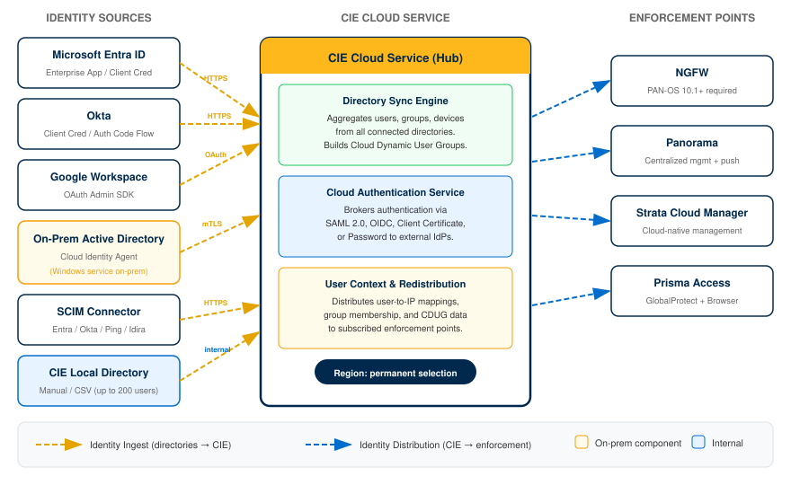
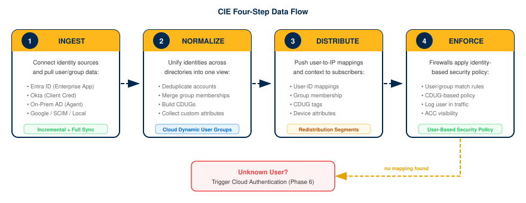
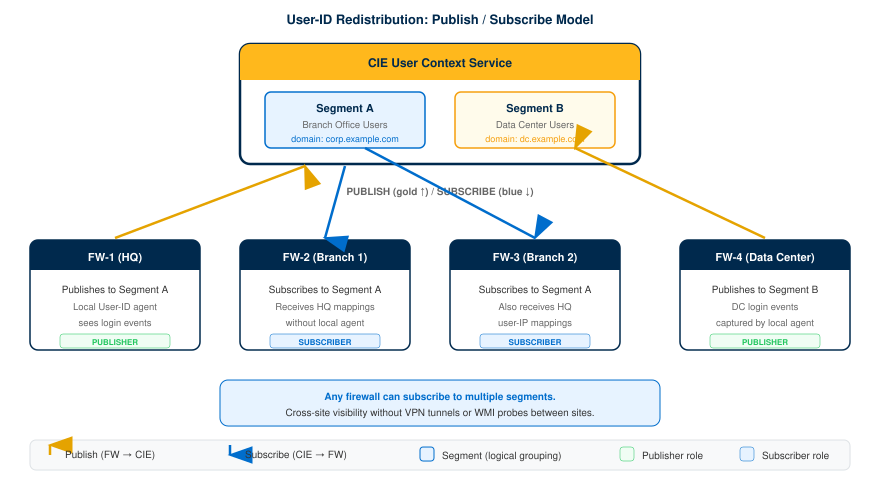
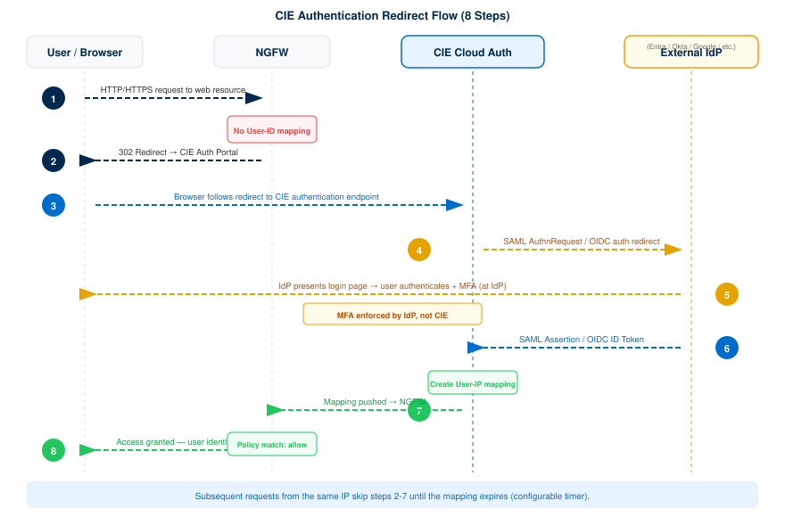

Cloud Identity Engine Implementation
End-to-end guide: CSP tenant activation through verified user-based firewall policy
The Cloud Identity Engine (CIE) is Palo Alto Networks' cloud-native identity service. It replaces per-firewall IdP connections with a single, centralized identity hub: firewalls connect to CIE once, and CIE handles all directory and authentication communication.
CIE is free. No auth code or standalone subscription needed. Enforcement points (NGFWs, Panorama, Prisma Access) require their own licenses, but CIE itself has no licensing cost.
This guide covers six directory types (Entra ID, Okta, Google Workspace, On-Prem AD, SCIM, CIE Local), four authentication methods (SAML 2.0, OIDC, client certificate, password), and three management platforms (Panorama, SCM, PAN-OS direct). Pick your path at each branching point and follow only the sections that match your environment.
Architecture Overview
Cloud Identity Engine (CIE) is a cloud-delivered identity hub that centralizes user identification, authentication, and group management across all Palo Alto Networks enforcement points. Instead of configuring each firewall to connect individually to every identity source, CIE aggregates user data from on-premises and cloud directories into a single service and redistributes it to NGFWs, Panorama, and Prisma Access.
The Cloud Identity Engine service itself is free. Enforcement points consuming directory data (NGFWs, Prisma Access) may require their own licenses. CIE requires PAN-OS 10.1 or later.
CIE performs three core functions that together replace the traditional spiderweb of per-firewall directory connections:
| Function | What It Does | Guide Phase |
|---|---|---|
| Directory Sync | Continuously monitors connected identity sources (Active Directory, Entra ID, Okta, Google Workspace, SCIM, CIE Local) and collects user attributes—name, email, department, group membership. Changes propagate in near real-time so security policy always reflects the current directory state. | Phase 3 & 4 |
| Authentication | Acts as a Cloud Authentication Service broker. When a firewall intercepts unauthenticated traffic, it redirects the user to CIE, which delegates the login to the organization's identity provider via SAML 2.0, OIDC, client certificate, or password. MFA requirements are enforced at the IdP—CIE relays the result back to the enforcement point. | Phase 6 & 7 |
| Redistribution | Distributes user-to-IP mappings, group memberships, and Cloud Dynamic User Group (CDUG) data to every subscribed firewall, Panorama instance, and Prisma Access tenant. Configure once in CIE; every enforcement point receives the same identity data without individual LDAP or RADIUS connections. | Phase 5 |
The result is a single pane of glass for identity: add a user in any connected directory and every enforcement point learns about them automatically. Remove a user and access is revoked everywhere within the next sync interval.
These two concepts serve different purposes in the CIE workflow. Understanding the distinction determines which phases of this guide apply to a given deployment.
| User Identification | User Authentication | |
|---|---|---|
| Question answered | "Who is behind this IP address?" | "Can this person prove they are who they claim to be?" |
| Mechanism | Directory Sync maps usernames, attributes, and group memberships to IP addresses using data from connected directories. | Cloud Authentication Service redirects the user to an IdP (via SAML, OIDC, certificate, or password) and relays the authentication result to the firewall. |
| User interaction | None—transparent. The firewall resolves the user from directory data without prompting. | Active—the user is redirected to a login page and must provide credentials or a certificate. |
| Use case | Apply user- and group-based security policy to traffic from known users on the corporate network. Example: allow domain\finance-team to reach the accounting application. |
Challenge unknown or unauthenticated users before granting access. Example: require MFA before allowing remote VPN users to access internal resources. |
| CIE components | Directory connections, Cloud Identity Agent (on-prem AD), Cloud Dynamic User Groups, User Context redistribution. | Authentication Types (SAML, OIDC, certificate, password), Authentication Profiles, Authentication Policy on the firewall. |
| Guide phases | Phases 3, 4, 5 | Phases 6, 7 |
Most deployments use both identification and authentication together. Identification provides passive user-to-IP mapping for known network users; authentication actively challenges users who cannot be identified passively (remote users, guests, BYOD devices). Phase 8 validates the combined end-to-end flow.
CIE uses a hub-and-spoke architecture. The CIE cloud service sits at the center. Identity sources connect on one side; enforcement points subscribe on the other. This eliminates direct firewall-to-directory connections and reduces configuration to a single integration point.

Components
| Component | Role | Location |
|---|---|---|
| Identity Sources (Spokes—Left) | ||
| Cloud Directories | Entra ID, Okta, Google Workspace, and SCIM-based providers connect directly to CIE over HTTPS using OAuth or client credentials. | Cloud (IdP tenant) |
| Cloud Identity Agent | Lightweight Windows service installed on a domain-joined server. Reads users and groups from on-premises Active Directory via LDAP and forwards them to CIE over a mutual TLS connection. Deploy multiple agents per domain for high availability. | On-premises (domain member server) |
| CIE Local Directory | A directory hosted within CIE itself for small-scale or testing scenarios. Supports up to 200 users with manual entry or CSV import. | CIE cloud service |
| CIE Cloud Service (Hub) | ||
| Directory Sync Engine | Aggregates user and group data from all connected sources. Performs incremental and full syncs on configurable intervals. | Palo Alto Networks cloud (region-specific) |
| Cloud Authentication Service | Brokers authentication requests between enforcement points and IdPs. Supports SAML 2.0, OIDC, client certificate, and password authentication types. | Palo Alto Networks cloud (region-specific) |
| User Context / Redistribution | Distributes user-to-IP mappings, group memberships, and CDUG data to all subscribed enforcement points. | Palo Alto Networks cloud (region-specific) |
| Enforcement Points (Spokes—Right) | ||
| NGFW (PAN-OS 10.1+) | Subscribes to CIE for user-ID mappings and authentication. Configured directly or via Panorama. | On-premises / cloud VM |
| Panorama | Centrally configures CIE as a User-ID mapping source and pushes the configuration to managed device groups. | On-premises / cloud VM |
| Strata Cloud Manager (SCM) | Associates CIE instances and redistribution profiles for cloud-managed deployments and Prisma Access. | Palo Alto Networks cloud |
| Prisma Access | Consumes CIE identity data for user-based policy on remote access and mobile users. | Palo Alto Networks cloud |
Region selection during CIE activation (Phase 2) is permanent and cannot be changed. Select the same region used by Prisma Access or other Palo Alto Networks cloud services to avoid latency and data-residency issues.
Data Flow Summary
- Ingest — Identity sources push or sync user/group data to the CIE hub (cloud directories via API; on-prem AD via Cloud Identity Agent over mTLS).
- Normalize — CIE aggregates users from all sources into a unified view, resolving attributes and building Cloud Dynamic User Groups.
- Distribute — Enforcement points subscribe to CIE and receive user-to-IP mappings, group memberships, and CDUG updates at configurable intervals.
- Enforce — Firewalls apply user- and group-based security policy using the identity data received from CIE. Unknown users trigger authentication via the Cloud Authentication Service.
The four-step pipeline visualized:

Phase 1: Prerequisites & Account Setup
Complete all prerequisite checks before activating CIE. Each step confirms a requirement that, if missed, blocks deployment or causes silent failures downstream.
Confirm you have a Palo Alto Networks Customer Support Portal (CSP) account and understand the licensing model. The Cloud Identity Engine service itself is free and does not require a standalone subscription or authorization code.
Core Service Availability (No Additional License Required)
Directory Sync, Cloud Authentication Service, and all standard CIE functionality are included at no cost on the following platforms:
- PA-Series and VM-Series firewalls running PAN-OS 10.1+
- Panorama running PAN-OS 10.1+
- Prisma Access (SCM-managed or Panorama-managed)
- Strata Cloud Manager (availability depends on held licenses such as Prisma Access, AIOps for NGFW Premium, or SCM Essentials/Pro)
Features That Require Additional Licenses
| Feature | Required License | Notes |
|---|---|---|
| Third-Party Device-ID | Device Security + Prisma Access |
API-based IP-to-device mappings; also required for Device-ID in Prisma Access |
| Dynamic Privilege Access (DPA) | Prisma Access |
Project-based resource isolation; must be activated by your account representative |
| Enterprise DLP / CASB Integration | Enterprise DLP or CASB-X |
Required on the associated tenant for DLP and Next-Generation CASB features |
Required Administrative Roles
Assign CIE-specific app roles to administrators in the Palo Alto Networks Hub (Common Services) before activation. Roles control access to tenant management, directory data, and secrets configuration. At minimum, the activating administrator needs the Superuser role on the CSP account.
Log in to the Customer Support Portal. Confirm your account is active and you can access the Activation Console. No authorization code is needed for CIE.
Verify that all firewalls and management platforms meet the minimum software versions for CIE integration.
| Component | Minimum Version | Notes |
|---|---|---|
| PA-Series / VM-Series Firewalls | PAN-OS 10.1 |
Required for CIE as a User-ID mapping source and Cloud Authentication Service |
| Panorama | PAN-OS 10.1 |
Required for centralized CIE configuration and redistribution |
| Prisma Access (Panorama-managed) | Any version with Panorama plugin | Panorama plugin must support CIE integration |
| Strata Cloud Manager | Current release | CIE is natively integrated; no plugin required |
| Cloud Identity Agent | 1.7.1 (recommended) |
Version 1.7.0 and earlier do not support proxy servers |
Later PAN-OS versions unlock additional CIE features. For example, CyberArk (Idira) SAML authentication requires PAN-OS 11.2+. Check feature-specific documentation if deploying advanced integrations.
On each firewall, run show system info | match sw-version. On Panorama, navigate to Dashboard > General Information. Confirm all devices report PAN-OS 10.1 or later.
Open the required FQDNs and ports so the Cloud Identity Agent can reach the CIE cloud service and validate certificates. All connections use TLS; certificate revocation checks use HTTP on port 80.
GoDaddy Certificate Verification URLs
The Cloud Identity Agent validates its mTLS certificate chain against GoDaddy CRL/OCSP endpoints. These three URLs must be reachable from the agent host:
| URL | Port | Protocol | Purpose |
|---|---|---|---|
http://crl.godaddy.com |
80 |
HTTP | Certificate Revocation List (CRL) download |
http://ocsp.godaddy.com |
80 |
HTTP | Online Certificate Status Protocol (OCSP) check |
https://certs.godaddy.com |
443 |
HTTPS | Intermediate CA certificate retrieval |
Region-Specific CIE Endpoints
Allow HTTPS (port 443) from the agent host to the endpoint matching your selected region. Allow traffic only for the region(s) where you have active tenants.
| Region | Agent Configuration Endpoint |
|---|---|
| United States (US) | agent-directory-sync.us.paloaltonetworks.com |
| European Union (EU) | agent-directory-sync.eu.paloaltonetworks.com |
| United Kingdom (UK) | agent-directory-sync.uk.paloaltonetworks.com |
| Singapore (SG) | agent-directory-sync.sg.paloaltonetworks.com |
| Canada (CA) | agent-directory-sync.ca.apps.paloaltonetworks.com |
| Japan (JP) | agent-directory-sync.jp.apps.paloaltonetworks.com |
| Australia (AU) | agent-directory-sync.au.apps.paloaltonetworks.com |
| Germany (DE) | agent-directory-sync.de.apps.paloaltonetworks.com |
| US Government | agent-directory-sync.gov.apps.paloaltonetworks.com |
| India (IN) | agent-directory-sync.in.apps.paloaltonetworks.com |
| Switzerland (CH) | agent-directory-sync.ch.apps.paloaltonetworks.com |
| Spain (ES) | agent-directory-sync.es.apps.paloaltonetworks.com |
| Italy (IT) | agent-directory-sync.it.apps.paloaltonetworks.com |
| France (FR) | agent-directory-sync.fr.apps.paloaltonetworks.com |
| China (CN) | agent-directory-sync.cn.apps.prismaaccess.cn |
| Poland (PL) | agent-directory-sync.pl.apps.paloaltonetworks.com |
| Qatar (QA) | agent-directory-sync.qa.apps.paloaltonetworks.com |
| Taiwan (TW) | agent-directory-sync.tw.apps.paloaltonetworks.com |
| Israel (IL) | agent-directory-sync.il.apps.paloaltonetworks.com |
| Indonesia (ID) | agent-directory-sync.id.apps.paloaltonetworks.com |
| South Korea (KR) | agent-directory-sync.kr.apps.paloaltonetworks.com |
| Saudi Arabia (SA) | agent-directory-sync.sa.apps.paloaltonetworks.com |
| South Africa (ZA) | agent-directory-sync.za.apps.paloaltonetworks.com |
The China (CN) region uses a different domain (prismaaccess.cn) and is only accessible from within the specified region.
On-Premises Directory Ports
| Protocol | Default Port | Direction | Purpose |
|---|---|---|---|
| LDAP | 389 |
Agent → Domain Controller | Unencrypted LDAP queries |
| LDAPS | 636 |
Agent → Domain Controller | LDAP over SSL |
| LDAP with STARTTLS | 389 |
Agent → Domain Controller | LDAPv3 TLS upgrade on port 389 |
From the server that will host the Cloud Identity Agent, confirm connectivity to the GoDaddy URLs and your region-specific endpoint:
curl -I http://crl.godaddy.com
curl -I http://ocsp.godaddy.com
curl -I https://certs.godaddy.com
curl -I https://agent-directory-sync.us.paloaltonetworks.comAll requests should return HTTP 200 or 301/302 (redirect). A timeout or connection refused indicates a firewall rule or proxy is blocking traffic.
If a Palo Alto Networks firewall sits between the Cloud Identity Agent and the CIE cloud service or Active Directory, configure the following Security policy rules.
Agent → CIE Cloud Service
- Create a Security policy rule allowing the
paloalto-cloud-identityApp-ID from the agent host to the CIE regional endpoint. - This App-ID requires the
sslandweb-browsingapplication signatures as implicit dependencies. - Create a separate rule allowing
sslandweb-browsingto the three GoDaddy URLs on ports80and443.
If SSL decryption is enabled on the firewall, exclude traffic between the Cloud Identity Agent and the CIE cloud service from decryption. The agent uses mutual TLS (mTLS) authentication. SSL decryption breaks the mTLS handshake and causes the agent connection to fail silently.
Add a Decryption Exclusion rule for the CIE regional endpoint FQDN under Device > Certificate Management > SSL Decryption Exclusion.
Agent → Active Directory
Use the appropriate App-ID based on the protocol selected during agent configuration:
| Agent Protocol | App-ID | Port |
|---|---|---|
| LDAP | ldap |
389 |
| LDAPS or LDAP with STARTTLS | ssl |
636 (LDAPS) or 389 (STARTTLS) |
Proxy Server Considerations
Cloud Identity Agent version 1.7.0 and earlier requires direct reachability to the regional endpoint and does not support proxy servers. If your network uses a proxy, upgrade the agent to version 1.7.1 or later before proceeding. Configure the proxy in the agent UI using <IP_Address>:<Port> format.
Non-Palo Alto Networks Firewall
If a third-party firewall sits in the path, allow:
- HTTPS (
443) from the agent host to the region-specific CIE endpoint - HTTP (
80) from the agent host tocrl.godaddy.comandocsp.godaddy.com - HTTPS (
443) from the agent host tocerts.godaddy.com - LDAP (
389) or LDAPS (636) from the agent host to domain controllers
Check the Traffic log on the firewall between the agent and CIE. Filter for the source IP of the agent host. Confirm sessions to the CIE endpoint show App-ID paloalto-cloud-identity with action allow. Confirm sessions to GoDaddy URLs show action allow. No sessions should show deny or drop.
Select the CIE region during activation. This is a permanent decision that cannot be changed after activation. The region determines where your identity data is stored and processed.
Region selection is irreversible. Once you activate CIE in a region, you cannot migrate to a different region. Choosing the wrong region requires deactivating and reactivating the service, which deletes all directory configurations, authentication profiles, and sync history.
Decision Criteria
- Data residency compliance — Select the region that satisfies your organization's data sovereignty requirements.
- Prisma Access alignment — If you use Prisma Access, select the same region as your Prisma Access deployment. Mismatched regions cause latency and may prevent CIE from associating with the correct SCM tenant.
- Latency to agent hosts — For on-premises AD deployments, choose the region closest to your Cloud Identity Agent hosts to minimize sync latency.
Available Regions
| Region | Code | Endpoint Domain |
|---|---|---|
| United States | US | *.us.paloaltonetworks.com |
| European Union | EU | *.eu.paloaltonetworks.com |
| United Kingdom | UK | *.uk.paloaltonetworks.com |
| Singapore | SG | *.sg.paloaltonetworks.com |
| Canada | CA | *.ca.apps.paloaltonetworks.com |
| Japan | JP | *.jp.apps.paloaltonetworks.com |
| Australia | AU | *.au.apps.paloaltonetworks.com |
| Germany | DE | *.de.apps.paloaltonetworks.com |
| US Government | GOV | *.gov.apps.paloaltonetworks.com |
| India | IN | *.in.apps.paloaltonetworks.com |
| Switzerland | CH | *.ch.apps.paloaltonetworks.com |
| Spain | ES | *.es.apps.paloaltonetworks.com |
| Italy | IT | *.it.apps.paloaltonetworks.com |
| France | FR | *.fr.apps.paloaltonetworks.com |
| China | CN | *.cn.apps.prismaaccess.cn |
| Poland | PL | *.pl.apps.paloaltonetworks.com |
| Qatar | QA | *.qa.apps.paloaltonetworks.com |
| Taiwan | TW | *.tw.apps.paloaltonetworks.com |
| Israel | IL | *.il.apps.paloaltonetworks.com |
| Indonesia | ID | *.id.apps.paloaltonetworks.com |
| South Korea | KR | *.kr.apps.paloaltonetworks.com |
| Saudi Arabia | SA | *.sa.apps.paloaltonetworks.com |
| South Africa | ZA | *.za.apps.paloaltonetworks.com |
Document your selected region code and confirm it matches the region used by your Prisma Access deployment (if applicable). Navigate to Strata Cloud Manager > Settings > Products and verify the Prisma Access region. Record the region in your deployment runbook before proceeding to Phase 2.
Plan agent placement, domain configuration, and directory-specific preparation before activating CIE.
Cloud Identity Agent Placement (On-Premises AD)
- Install the agent on a Windows server physically located near the domain controllers it queries. Network latency between the agent and domain controllers directly affects sync performance.
- If domain controllers are in different geographic locations, install a separate agent at each location, near its respective domain controllers.
- A single agent can communicate with up to 20 domains.
- The service account used by the agent must have LDAP bind permissions across all configured domains.
High Availability
- Configure multiple agents per domain for redundancy. Each agent must have identical configuration.
- CIE communicates with only one agent at a time. If an agent becomes unavailable, CIE automatically connects to the next available agent.
- Agents do not communicate with each other.
- Configure multiple domain controllers per domain so the agent can fail over if a DC is unavailable.
When configuring the Cloud Identity Agent, do not use Global Catalog ports (3268 for LDAP or 3269 for LDAPS). The agent must connect using standard LDAP port 389 or LDAPS port 636. Global Catalog ports return a partial attribute set that prevents CIE from correctly computing cross-domain group memberships.
Cross-Domain Group Membership
To resolve group memberships that span multiple domains in an AD forest, configure all relevant domains on the Cloud Identity Agent(s). The agent must connect to each domain's domain controllers using standard LDAP (389) or LDAPS (636) ports.
Azure AD / Entra ID Preparation
Audit your Microsoft Entra ID (Azure AD) for circular group references before connecting to CIE. A circular reference occurs when a group is a direct or indirect member of itself (e.g., Group A contains Group B, and Group B contains Group A). Circular references prevent CIE from accurately computing group memberships.
CIE automatically removes circular references during sync to remain operational, but the affected group memberships may be incorrectly computed. Manually remove all circular references and run a sync to verify correct group membership.
Deployment Planning Checklist
| Item | Detail | Status |
|---|---|---|
| Region selected | Matches Prisma Access region and data residency requirements | |
| CSP account verified | Active account with Superuser role | |
| PAN-OS version confirmed | All firewalls and Panorama at 10.1+ | |
| Network connectivity tested | GoDaddy CRL/OCSP URLs and regional endpoint reachable | |
| SSL decryption exclusion configured | CIE traffic excluded from decryption (if applicable) | |
| Agent host(s) identified | Windows server(s) near domain controllers | |
| HA agents planned | 2+ agents per domain for redundancy | |
| Service account provisioned | LDAP bind permissions across all target domains | |
| Global Catalog ports excluded | Agent configured for port 389/636 only, NOT 3268/3269 | |
| Azure AD circular refs resolved | No group is a direct or indirect member of itself | |
| MaxValRange attribute checked | If custom value is set, does not end in 65 | |
| CRL reload window noted | Avoid initial agent config during 9:00-10:00 PM CDT (US) or CEST (EU) |
Avoid configuring the agent for the first time during the daily certificate revocation list (CRL) reload window: 9:00-10:00 PM CDT (US region) or 9:00-10:00 PM CEST (EU region). If the initial attribute sync occurs during this window and fails, wait a few minutes and then trigger a full sync manually from the CIE dashboard.
Complete every row in the Deployment Planning Checklist above. All items must have a confirmed status before proceeding to Phase 2: Activate CIE. Print or save this checklist for your deployment runbook.
Phase 2: Activate CIE
Activation provisions the Cloud Identity Engine service on your Palo Alto Networks tenant and selects the deployment region. The CSP account used for activation receives the Superuser role on the default tenant and all tenants it subsequently creates. The region selected during activation is permanent and cannot be changed afterward.
Choose the activation region carefully. It determines where CIE stores identity data and cannot be changed after activation. If you use Prisma Access, align the CIE region with your Prisma Access tenant region.
The activation workflow differs depending on whether you have one or multiple Customer Support Portal (CSP) accounts. Select the tab that matches your environment. Your selection persists across the page.
- Single CSP Account -- most organizations with one support contract. The CSP account is auto-populated and a default tenant is created automatically.
- Multiple CSP Accounts -- MSSPs, distributed enterprises, or organizations with separate support contracts per business unit. Allows tenant/subtenant allocation and hierarchy building.
Use this path if your Palo Alto Networks username is associated with exactly one Customer Support Portal account. The activation console auto-populates the account number, and CIE creates a single default tenant.
Launch the Palo Alto Networks Hub and begin the activation workflow.
- Log in to the Palo Alto Networks Hub with your CSP credentials.
- Navigate to the Activation Console.
- Click Activate.
- Confirm that the Customer Support Account field is pre-populated with your account number. Because you have only one CSP account, no selection is required.
If the account field is not pre-populated or you see multiple accounts, switch to the Multiple CSP Accounts tab.
The activation wizard displays your CSP account number in the Customer Support Account field with no dropdown selector.
Set the product recipient name and choose the region where CIE will store identity data.
- In the Recipient field, accept the default name (matches your CSP account) or enter a custom name.
- Select a Region from the dropdown. Available regions include Americas, Europe, Asia Pacific, Japan, and others.
The region cannot be changed after activation. Verify it aligns with your data residency requirements and, if applicable, your Prisma Access tenant region before proceeding.
The Recipient and Region fields display your chosen values. No validation errors appear.
Accept the terms, activate the service, and confirm the default tenant was created.
- Check the box to Agree to the terms and conditions.
- Click Activate.
- Wait for the activation to complete. A single default tenant is auto-created.
The CSP account used for activation receives the Superuser role on this tenant and any future tenants it creates. Record which account performed the activation for your change management records.
After activation completes, optionally manage the product from Strata Cloud Manager > Settings > Products, or configure identity and access management.
The Hub displays a confirmation message. Navigate to Tenant Management and confirm a default tenant appears in the tenant list with your account name.
| Symptom | Cause | Resolution |
|---|---|---|
| Activation button is grayed out | Terms and conditions checkbox not selected, or browser session expired. | Check the agreement box. If still grayed out, clear browser cache, log out, and log back in. |
| No default tenant appears after activation | Activation may still be provisioning (typically under 60 seconds). | Refresh the Hub page. If no tenant appears after 5 minutes, open a support case. |
| Wrong region displayed post-activation | Region was selected incorrectly before clicking Activate. | Region cannot be changed. Contact Palo Alto Networks support to discuss options. A new tenant in the correct region may need to be provisioned. |
| CSP account field shows multiple accounts | Your username is linked to more than one CSP account. | Switch to the Multiple CSP Accounts tab and follow that workflow. |
Insufficient permissions error |
Your CSP account lacks the required role. | Confirm the account has an active support entitlement. Contact your account administrator to verify permissions. |
Use this path if your Palo Alto Networks username is associated with more than one Customer Support Portal account. This workflow lets you choose which account to activate under, allocate licenses to specific tenants or subtenants, and optionally begin building a tenant hierarchy for MSSPs or distributed enterprises.
Select which Customer Support Portal account to use for this CIE activation.
- Log in to the Palo Alto Networks Hub with your CSP credentials.
- Navigate to the Activation Console.
- Click Activate.
- From the Customer Support Account dropdown, select the account number to use for this activation.
The CSP account you select here receives the Superuser role on all tenants it creates. Choose the account that should own administrative control of this CIE deployment.
The Customer Support Account field displays the selected account number. The wizard advances to the allocation step.
Decide whether to allocate the entire license to a single tenant or distribute it across a tenant/subtenant hierarchy.
- In the Recipient field, accept the default tenant name or enter a custom name for the primary tenant.
- For a single tenant: Keep the default allocation and proceed to the next step.
- For a subtenant (MSSP/distributed enterprise):
- After creating the primary tenant, click Allocate to subtenant.
- Accept or rename the subtenant.
- Click Done when the allocation is complete.
The activation wizard only supports creating one level of subtenant. Build out the full tenant hierarchy after activation through Tenant Management. Consider identity and access inheritance when designing the hierarchy.
The recipient section displays the tenant (and subtenant, if created) with the correct names. The allocation summary reflects your intended structure.
Choose the region where CIE will store identity data for this tenant.
- Select a Region from the dropdown. Available regions include Americas, Europe, Asia Pacific, Japan, and others.
The region cannot be changed after activation. Verify it aligns with your data residency requirements and, if applicable, your Prisma Access tenant region before proceeding.
The Region field displays your chosen region with no validation errors.
Accept the terms, activate the service, and optionally extend the tenant hierarchy.
- Check the box to Agree to the terms and conditions.
- Click Activate.
- Wait for the activation to complete. The primary tenant (and subtenant, if allocated) is created.
- (Optional) After activation, navigate to Tenant Management to build out additional levels in the hierarchy.
- (Optional) Manage your product from Strata Cloud Manager.
- (Optional) Share licenses across tenants through Tenant Management > Share Subscription.
To create additional tenants after activation, navigate to the Hub > Tenant Management > Add Tenant. Enter a name, select a Business Vertical, and optionally provide custom support contact information. You must have the App Administrator role to create, rename, or delete tenants.
The Hub displays a confirmation message. Navigate to Tenant Management and confirm the tenant hierarchy matches your allocation. Each tenant shows the correct region and the activating CSP account has Superuser access.
| Symptom | Cause | Resolution |
|---|---|---|
| Only one CSP account appears in the dropdown | Additional accounts may not be linked to your username. | Verify account linkage in the Customer Support Portal. Contact your account administrator to associate additional accounts with your username. |
| Allocate to subtenant button is missing | The primary tenant must be created first before subtenant allocation is available. | Complete the primary tenant allocation, then the subtenant option appears. |
| Cannot build more than two hierarchy levels during activation | The activation wizard supports only tenant + one subtenant level. | Complete activation, then navigate to Tenant Management to add additional hierarchy levels. |
| Subtenant does not inherit license | License sharing must be configured explicitly after activation. | Go to Tenant Management, select the parent tenant, and use Share Subscription to allocate the license to the subtenant. |
| Wrong CSP account used for activation | Incorrect account selected from the dropdown. | The activating CSP account receives Superuser on all tenants it creates. If the wrong account was used, adjust access roles in Identity and Access Management or contact support. |
| Tenant appears but shows wrong region | Region was selected incorrectly before clicking Activate. | Region cannot be changed post-activation. Contact Palo Alto Networks support to discuss provisioning a new tenant in the correct region. |
After activation, open the Cloud Identity Engine dashboard to confirm the service is running and familiarize yourself with the interface before connecting directories in Phase 3.
- From the Palo Alto Networks Hub, click the Cloud Identity Engine app tile (or navigate to Strata Cloud Manager > Settings > Products and click Manage next to Cloud Identity Engine).
- If you created multiple tenants, select the tenant to manage from the tenant switcher in the top-right corner.
- Review the dashboard landing page. Key sections include:
- Directories -- lists connected directories (empty after initial activation).
- Users -- displays synchronized user accounts.
- Groups -- displays synchronized groups.
- Authentication -- configure SAML, OIDC, certificate, and password authentication types.
- Logs -- view sync and authentication event logs for troubleshooting.
The Directories, Users, and Groups sections will be empty until you connect a directory in Phase 3. The dashboard is functional immediately after activation -- no additional provisioning wait time is required.
The CIE dashboard loads without errors. The tenant name in the top-right matches the tenant created during activation. The Directories section shows zero configured directories, confirming a clean starting state for Phase 3.
Phase 3: Connect a Directory
Connect your organization's identity source to the Cloud Identity Engine for user and group synchronization.
Select the directory type that matches your identity infrastructure. CIE supports cloud directories (Entra ID, Okta, Google Workspace), on-premises Active Directory via the Cloud Identity Agent, SCIM-based provisioning from any compliant IdP, and a built-in local directory for testing. The selection persists across the page.
This phase configures Okta as a directory source for firewall user identity (User-ID, authentication policy). If you are looking to federate SCM administrator login to Okta instead, that is a separate integration covered in the SCM Administrator SSO with Okta specialty guide.
- Entra ID (Azure AD) -- Microsoft 365 or Azure-based identity. Supports Enterprise App (recommended) or Client Credential Flow.
- Okta -- Okta Workforce Identity. Supports Client Credential Flow (recommended) or Auth Code Flow.
- Google Workspace -- Google Admin-managed users and groups. OAuth-based, manual sync intervals only.
- On-Prem AD -- Windows Active Directory or OpenLDAP via the Cloud Identity Agent installed on a local server.
- SCIM Connector -- Any SCIM-compliant IdP (Entra, Okta, PingOne, PingFederate, Idira). Granular attribute control.
- CIE Directory -- Built-in local directory for testing. Maximum 200 users.
Entra ID supports two connection methods. Select the method that aligns with your administrative privileges and security requirements.
| Criteria | Enterprise App (Recommended) | Client Credential Flow |
|---|---|---|
| Azure role required | Global Administrator (one-time consent) | Application Administrator |
| Setup complexity | Lower -- CIE generates onboarding URL | Higher -- manual app registration, permissions, secret |
| Ongoing maintenance | None -- permissions auto-managed | Client secret rotation (max 2-year expiry) |
| Login requirement | Global Admin signs in once via onboarding URL | No login required after initial setup |
| Additional data collection | Risk, roles, devices, apps -- toggle in CIE | Risk, roles, devices, apps -- manual API permission grants |
| Best for | Most deployments | Service account-based access, no Global Admin available |
You have selected either Enterprise App or Client Credential Flow and confirmed the required Azure role is available. Proceed to the corresponding collapsible section below.
Retrieve your Entra ID tenant identifier from the Azure portal.
- Log in to the Microsoft Entra admin center using a Global Administrator account (or an account you intend to use for the CIE connection).
- Select Overview (if not already displayed).
- Copy the
Directory (tenant) IDvalue and store it in a secure location.
You have a GUID-format tenant ID (e.g., xxxxxxxx-xxxx-xxxx-xxxx-xxxxxxxxxxxx) saved securely.
Create the Entra ID directory entry in the Cloud Identity Engine and generate the Enterprise App onboarding URL.
- In the Cloud Identity Engine app, select Directories → Add New Directory.
- Select Set Up an Entra ID Cloud Directory.
- (Optional) Enable additional data collection:
- Collect user risk information -- requires
IdentityRiskyUser.Read.AllandIdentityRiskEvent.Read.Allpermissions. Used for attribute-based Cloud Dynamic User Groups. - Collect Roles and Administrators -- requires
Directory.Read.AllorRoleManagement.Read.Directory. Enabled by default for Cortex XDR-associated tenants. - Collect enterprise applications -- requires
Application.Read.All. Deselect to reduce sync time if not needed. - Collect device information -- requires
Device.Read.All. Used by Cortex XDR and Device Security.
- Collect user risk information -- requires
- Enter the Directory ID (tenant ID copied in Step 3A.2).
- Click Generate URL to create the CIE Enterprise App onboarding URL.
- Copy the generated URL.
If you do not have Global Administrator privileges, share the generated URL with an Entra ID Global Administrator to complete the registration offline.
The onboarding URL is generated and copied. The Directory ID field is populated with your tenant ID.
A Global Administrator opens the onboarding URL to register the CIE Enterprise App in your Entra ID tenant.
- Open the onboarding URL (from Step 3A.3) in a browser. If a non-Global-Admin generated the URL, the Global Admin opens the URL they received.
- Enter the email address or phone number for the Global Administrator account, then click Next.
- Enter the password and click Sign in.
- Review the requested permissions and click Accept.
Accepting automatically grants the following base permissions:
Device.Read.All-- Read all devicesGroup.Read.All-- Read all groupsUser.Read.All-- Read all users' full profilesUser.Read-- Sign in and read user profile
Do not revoke permissions for options you have enabled. If you revoke a required permission, the sync cannot complete. To restore revoked permissions, edit the directory configuration and repeat Steps 3A.3 through 3A.4.
After clicking Accept, the browser redirects back to the CIE app. The Enterprise App now appears under Enterprise applications in the Entra admin center.
Filter groups to reduce sync time and minimize data collection. Choose between CSV upload (recommended for large group sets) or inline filters.
Option A: CSV Upload
- Click Upload CSV.
- Drag and drop or click Browse files to select the
.csvfile. - Select the upload type: Update Filters (merge) or Replace Existing Filters (overwrite).
- Select the Attribute Name (
NameorUnique Identifier). - Click Apply.
Option B: Inline Group Filter
- Select the group attribute to filter on:
- Name — filter by group display name
- Unique Identifier — filter by group object ID
- Select the filter operator:
- begins with (Name attribute only) — partial match
- is equal to — exact match
- Enter the filter value (alphanumeric for name, numeric for unique identifier).
- (Optional) Click Add OR / Add Filter to add additional filter conditions. CIE matches the first condition, then continues to additional conditions.
The filter conditions display in the CIE directory configuration. Filtered groups will be reflected after the next sync cycle.
Validate the connection and finalize the directory configuration.
- Click Test Connection. Confirm that Success displays.
- (Optional) Enter a custom Directory Name (up to 15 lowercase alphanumeric characters, including hyphens, periods, and underscores).
- Click Submit.
If you collect data from both an on-premises AD and Entra ID in the same CIE tenant, append .aad to the custom directory name to avoid domain name conflicts. Palo Alto Networks recommends using separate CIE tenants for each directory type.
The Directories page displays with the new Entra ID directory. The Sync Status column shows In Progress or Successful. User, group, and device counts populate after the initial sync completes.
Entra ID syncs different object types on different schedules:
- Users, Groups, Devices — synced on every incremental sync cycle
- Enterprise Applications — synced every 3 hours
- Roles — synced every 24 hours
Plan accordingly if you rely on application or role data for policy decisions.
Register a custom application in the Azure Portal for the Cloud Identity Engine to use as a service account.
- In the Microsoft Entra admin center, navigate to Identity → Applications → App registrations.
- Click New registration.
- Enter a Name (e.g.,
CIE-Directory-Sync), then click Register.
The app registration overview page displays with an Application (client) ID and Directory (tenant) ID.
Assign the minimum required Microsoft Graph permissions to the app registration.
- In the app registration, select API permissions → Add a permission.
- Select Microsoft Graph → Application permissions.
- Add the following permissions:
Device.Read.All-- Read all devicesGroupMember.Read.All-- Read all group membershipsUser.Read.All-- Read all users' full profiles
- Switch to Delegated permissions and add:
User.Read-- Sign in and read user profile
- Click Grant admin consent for DirectoryName.
- Click Yes to confirm.
For a simpler but less granular scope, you can substitute Directory.Read.All and Organization.Read.All. For user risk data, add IdentityRiskyUser.Read.All and IdentityRiskEvent.Read.All. For roles, add RoleManagement.Read.Directory. For apps, add Application.Read.All.
All listed permissions show a green checkmark with Granted for DirectoryName status in the API permissions list.
Generate a client secret for the app registration. CIE uses this secret to authenticate API requests.
- In the app registration, select Certificates & secrets → New client secret.
- Enter a Description (e.g.,
CIE-sync). - Select an expiration period. Maximum is 2 years. Default is 6 months.
- Click Add.
- Immediately copy the Value column (the secret itself) and store it securely. This value is shown only once.
- Navigate to Overview and copy:
- Application (client) ID
- Directory (tenant) ID
Track the secret expiration date. When it expires, you must generate a new secret in Azure and update the configuration in the Cloud Identity Engine. A calendar reminder is recommended.
You have three values stored securely: Directory (tenant) ID, Application (client) ID, and Client Secret Value.
Configure the Client Credential Flow in the Cloud Identity Engine using the values from Azure.
- In the Cloud Identity Engine app, select Directories → Add New Directory.
- Select Set Up an Azure directory.
- (Optional) Enable data collection options: user risk, roles & administrators, enterprise applications, device information.
- Enter the credentials:
Azure Portal Field CIE Field Directory (tenant) ID Directory ID Application (client) ID Client ID Client secret Value Client Secret - Click Test Connection. Confirm that Success displays.
- (Optional) Enter a custom Directory Name.
- (Optional) Configure group filtering (same inline/CSV options as the Enterprise App method).
- Click Submit.
The Directories page displays. The new Entra ID directory shows a Sync Status of In Progress or Successful. User and group counts populate after the initial sync completes.
| Symptom | Cause | Resolution |
|---|---|---|
| Auth Code Flow option unavailable | Auth Code Flow has been deprecated for new Entra ID configurations | Use the CIE Enterprise App or Client Credential Flow for all new configurations. Existing Auth Code configurations remain functional. |
| Client secret expired | Azure client secrets have a maximum lifetime of 2 years | Generate a new client secret in Azure Portal → Certificates & secrets. Update the secret value in CIE by reconnecting the directory (Actions → Reconnect). |
| Duplicate domain name conflict | On-premises AD and Entra ID share the same domain in one CIE tenant | Customize the Entra ID directory name by appending .aad (e.g., contoso.com.aad). Palo Alto Networks recommends separate CIE tenants for each directory type. |
| Circular group references cause sync failure | Group A is a member of Group B, which is a member of Group A | Remove circular group memberships in Entra ID. CIE cannot resolve infinite loops in group nesting. |
| Sync fails after permission revocation | A required API permission was revoked in the Azure Portal | Edit the directory configuration in CIE and re-complete the Enterprise App onboarding flow (Steps 3A.3--3A.4) or re-grant permissions in the Azure Portal for Client Credential Flow. |
| Test Connection shows Failed | Invalid credentials or network connectivity issue | Verify the Directory ID, Client ID, and Client Secret. Confirm CIE FQDNs are permitted through your firewall (see Phase 1 network requirements). |
Okta supports two connection methods via OpenID Connect (OIDC). Select the method that matches your operational requirements.
| Criteria | Client Credential Flow (Recommended) | Auth Code Flow |
|---|---|---|
| Authentication | Service account -- no user login required | Admin login required for initial setup and changes |
| Reconnection | None required | Must reconnect every 90 days or sync fails |
| Setup | Install pre-built API service integration from Okta | Create custom OIDC Web Application manually |
| Credentials | New client ID & secret from API service integration | Client ID & secret from OIDC app |
| Best for | Production deployments, long-term stability | Legacy configurations, limited Okta API access |
You must create a separate OIDC app integration for CIE directory sync, even if you already configured Okta as a SAML IdP. Reusing a SAML app causes sync failures after the initial sync.
You have selected either Client Credential Flow or Auth Code Flow and confirmed the required Okta admin role is available.
Install the pre-built Palo Alto Networks Cloud Identity Engine integration from the Okta Integration Network.
- In the Okta Administrator Portal, navigate to Applications → API Service Integrations.
- Click Add Integration.
- Search for
Palo Alto Networks Cloud Identity Engine. - Select the correct app:
- Palo Alto Networks Cloud Identity Engine (Application-enabled) -- if you use application data in Security policy.
- Palo Alto Networks Cloud Identity Engine -- if you do not use application data.
- Click Next, then Install & Authorize the API service integration.
The integration automatically configures the following API scopes:
- Users and groups -- read existing users and group memberships
- Authorization servers -- read authorization servers
- (Application-enabled only) Apps -- read apps
- Logs -- read system log entries
The integration displays Installed status in API Service Integrations.
Collect the credentials generated by the API service integration.
- On the installation confirmation screen, click Copy to clipboard to copy the Client Secret. Store it securely.
The client secret is displayed only once. Copy and store it before clicking Done. If lost, you must delete and reinstall the integration.
- Click Done.
- Copy the Okta Domain and the Client ID from the integration details. Store both securely.
Edit the domain value by removing the https:// prefix before entering it in CIE. The Client ID must begin with 0.
You have three values stored securely: Okta Domain (without https://), Client ID (starts with 0), and Client Secret.
Configure the Okta directory in the Cloud Identity Engine using Client Credential Flow.
- In the Cloud Identity Engine app, select Directories → Add New Directory.
- Select Set Up a Cloud Directory → Okta.
- Under Select Connection Flow, select Client Credential Flow.
- (Optional) Select Collect enterprise applications to sync app data. Requires the Application-enabled integration.
- (Optional, Strata Logging Service only) Select Collect authentication logs and forward to Strata Logging Service.
- Enter the credentials:
Okta Field CIE Field Okta Domain Domain Client ID Client ID Client Secret Client Secret - Click Test Connection. Confirm that Success displays.
- (Optional) Enter a custom Directory Name (up to 15 lowercase alphanumeric characters including hyphens, periods, underscores).
- Click Submit.
The Directories page displays. The Okta directory shows a Sync Status of In Progress or Successful. User and group counts populate after the initial sync.
Create a dedicated OIDC app integration for CIE directory sync.
- In the Okta Administrator Dashboard, create a new app integration.
- Select OIDC - OpenID Connect as the sign-in method.
- Select Web Application as the application type, then click Next.
- Clear the existing Sign-in redirect URIs and replace with your CIE redirect URI. To construct the URI:
- Copy your CIE tenant URL (e.g.,
https://directory-sync.us.paloaltonetworks.com/directory?instance=<InstanceId>) - Replace everything after the domain with
/authorize(e.g.,https://directory-sync.us.paloaltonetworks.com/authorize)
- Copy your CIE tenant URL (e.g.,
- Skip Sign-out redirect URIs and Base URIs (not required).
- Select Skip group assignment for now, then click Save.
The OIDC Web Application is created and visible under Applications in the Okta Admin Dashboard.
Before creating the OIDC app, you must have a user with Admin Roles assigned in Okta. Create a dedicated admin user if one does not exist, and assign the required admin role to authorize API access. Additionally, note your CIE tenant URL; you will need it to construct the Sign-in redirect URI (https://<tenant-url>/api/sso/callback).
Enable refresh token support, grant API scopes, and collect credentials.
- Edit the General Settings of the app you created.
- Under Grant type, select Refresh token. This is mandatory.
- Select Use persistent token.
- Click Save.
- Select General, then copy the Client ID and Client Secret. Store them securely.
- Copy your Okta Domain from the upper-right corner of the dashboard.
- Select Assignments and assign the app to the administrator account that will configure CIE.
- Select Okta API Scopes and grant consent to the following scopes:
okta.authorizationServers.read(required only if you have more than one authorization server)okta.groups.readokta.logs.readokta.users.readokta.users.read.self- (Optional)
okta.apps.read-- for enterprise application data collection
All required scopes show Granted status. You have the Client ID (starts with 0), Client Secret, and Okta Domain stored securely.
Configure the Auth Code Flow in CIE and authenticate with Okta.
- In the Cloud Identity Engine app, select Directories → Add New Directory.
- Select Set Up a Cloud Directory → Okta.
- Select Auth Code Flow as the connection method.
- (Optional) Select Collect enterprise applications (requires
okta.apps.readscope). - (Optional) Select Collect authentication logs and forward to Strata Logging Service.
- Enter the Domain (remove the
https://prefix), Client ID (must begin with0), and Client Secret. - Click Sign in with Okta and enter your Okta administrator credentials. When successful, Logged In displays.
- Click Test Connection. Confirm that Success displays.
- (Optional) Enter a custom Directory Name.
- Click Submit.
Palo Alto Networks recommends using the built-in Okta authorization server. If you use a custom authorization server, additional configuration may be required.
With Auth Code Flow, you must reconnect the directory every 90 days to refresh the authentication token. Missing this deadline causes sync failure. Consider migrating to Client Credential Flow for long-term stability.
CIE does not support the default Okta group Everyone because Okta does not return this group through its API. Do not reference the Everyone group in CIE policies; use explicit group assignments instead.
The Directories page displays. The Okta directory shows a Sync Status of In Progress or Successful.
| Symptom | Cause | Resolution |
|---|---|---|
| Sync fails after ~90 days (Auth Code Flow) | Authentication token expired | Navigate to Directories → Actions → Reconnect and re-authenticate. Consider migrating to Client Credential Flow. |
| Client ID rejected by CIE | Okta Client IDs must begin with 0 |
Verify the Client ID was copied correctly from the Okta app integration, not from another field. |
| "Everyone" group not synced | CIE excludes the default Okta "Everyone" group by design | This is expected behavior. Create explicit groups for policy enforcement instead of relying on the "Everyone" group. |
| Cannot change domain after initial setup | The domain field is immutable after submission | Delete the existing directory configuration and create a new one with the correct domain. |
| Subsequent syncs fail despite successful initial sync | SAML app was used instead of a separate OIDC app | Create a dedicated OIDC app integration for CIE. Do not reuse the SAML IdP app. |
| Auth Code credentials incompatible with Client Credential Flow | Different credential types used by each flow | Obtain new client ID and secret from the API Service Integration (Client Credential Flow). The Auth Code OIDC app credentials are not compatible. |
Grant the necessary administrator privileges in the Google Admin console for CIE directory access.
- In the Google Admin console, select Admin roles.
- Select an existing role (or create a new one), then click Privileges.
- Enable the following privileges, then Save:
| Category | Privilege |
|---|---|
| Admin console privileges | Organizational Units → Read |
| Users → Read | |
| Groups (all sub-privileges) | |
| Services → Mobile Device Management → Manage Devices and Settings | |
| Services → Chrome Management → Settings → Manage Chrome OS → Devices → Manage Chrome OS Devices (read-only) | |
| Domain Settings | |
| Admin API privileges | Organization Units → Read |
| Users → Read | |
| Groups (all sub-privileges) | |
| Groups → Create | |
| Groups → Read | |
| Groups → Update | |
| Groups → Delete | |
| Billing Management → Billing Read, Domain Management |
Google Workspace requires write permissions on Groups (Create, Update, Delete) for CIE to function correctly, even though CIE only reads group data. This is a Google API requirement.
The admin role shows all listed privileges enabled. The role is assigned to the account that will authenticate CIE.
Authorize the CIE application in the Google Admin console as a trusted third-party app.
- In the Google Admin console, navigate to Security → API controls and click Manage Third-Party App Access.
- Click Configure new app → OAuth App Name Or Client ID.
- Search for
Palo Alto Networks Cloud Identity Engine Directory Syncand click Search. - Select the Palo Alto Networks Cloud Identity Engine Directory Sync app.
- Select the OAuth Client ID option (if not already selected), then click Select.
- Set the App access option to Trusted: Can access all Google services, then click Configure.
The CIE Directory Sync app appears in the third-party app access list with Trusted status.
Retrieve your Google Workspace Customer ID for use in the CIE configuration.
- In the Google Admin console, navigate to Account → Account Settings.
- Copy the Customer ID and store it securely.
You have a Customer ID value (e.g., C01abc2de) stored securely.
Create the Google directory entry in CIE and authenticate with Google.
- In the Cloud Identity Engine app, select Directories → Add New Directory.
- Select Set Up a Cloud Directory → Google.
- Enter the Customer ID copied in Step 3C.3.
- Click Sign in with Google and enter the Google Admin credentials associated with the Customer ID.
- When login is successful, Signed In displays.
- Click Test Connection. Confirm that Success displays.
- (Optional) Enter a custom Directory Name (up to 15 lowercase alphanumeric characters including hyphens, periods, underscores).
- Click Submit.
The Directories page displays. The Google directory shows a Sync Status of In Progress or Successful.
Google Workspace directories sync on the standard Cloud Identity Engine schedule. Unlike Entra ID and Okta, Google Workspace does not support incremental sync: each sync is a full directory read.
You can trigger a manual full sync at any time from the CIE dashboard if you need changes reflected immediately (for example, after onboarding a batch of new users).
- In the Cloud Identity Engine app, navigate to Directories.
- Locate your Google Workspace directory and click Sync Now to trigger an on-demand full sync.
The directory Sync Status changes to In Progress, then Successful once the sync completes.
Confirm that the Cloud Identity Engine is successfully synchronizing users and groups from Google Workspace.
- In the Cloud Identity Engine app, select Directories.
- Verify the Google directory row shows:
- Sync Status: Successful
- Last Sync: a recent timestamp
- Users and Groups: non-zero counts matching expectations
- (Optional) Select View Data to inspect individual user and group records.
The Google directory shows Successful sync status with the expected user and group counts populated.
| Symptom | Cause | Resolution |
|---|---|---|
| No incremental sync available | Google Directory supports only full sync at fixed intervals (6h/12h/24h) | This is a platform limitation. Set the shortest interval (6 hours) if near-real-time sync is needed, or trigger manual sync via Actions → Refresh. |
| Sync fails with permission error | Required Google Admin API privileges are missing, including write permissions on Groups | Re-verify all privileges from Step 3C.1 are enabled. Google requires Groups write permissions (Create, Update, Delete) even for read-only CIE access. |
| OAuth consent blocked | CIE app not configured as Trusted in Google Admin | Navigate to Security → API controls → App Access Control and confirm the CIE app is set to Trusted. |
| Connection lost after Google Admin password change | OAuth session invalidated | Reconnect the directory: Actions → Reconnect, re-authenticate with updated Google Admin credentials, and test the connection. |
Download the Cloud Identity Agent from the CIE app and install it on a supported Windows server within your on-premises network.
Do not install the Cloud Identity Agent on the same host as the User-ID agent. Both agents require the same port, so each must run on a dedicated host.
- Log in to the hub and select the Cloud Identity Engine app.
- Select Directories → Add New Directory.
- Select Set Up an On-Premises Directory.
- Click Download Agent. The
DaInstall.msifile downloads. - Copy
DaInstall.msito the target Windows server. - Run
DaInstall.msiand follow the installation wizard prompts. - Navigate to the install directory. Default:
C:\Program Files (x86)\Palo Alto Networks\Cloud Identity Agent\ - Double-click
CloudIdAgentController.exeto launch the Cloud Identity Agent.
Verify the server time is correct and synced to a valid NTP server before installation. Incorrect time prevents successful attribute synchronization. TLS 1.2 must be enabled on the server; TLS 1.3 is strongly recommended.
The Cloud Identity Agent controller window opens. The Cloud Identity Engine service is running in the background on the host.
Configure the agent to communicate with the correct CIE regional endpoint. The region must match the CIE tenant region selected during activation.
- In the Cloud Identity Agent, select Cloud Identity Configuration.
- Enter the Agent Configuration endpoint matching your CIE tenant region:
| Region | Agent Configuration Endpoint |
|---|---|
| United States (US) | agent-directory-sync.us.paloaltonetworks.com |
| European Union (EU) | agent-directory-sync.eu.paloaltonetworks.com |
| United Kingdom (UK) | agent-directory-sync.uk.paloaltonetworks.com |
| Singapore (SG) | agent-directory-sync.sg.paloaltonetworks.com |
| Canada (CA) | agent-directory-sync.ca.apps.paloaltonetworks.com |
| Japan (JP) | agent-directory-sync.jp.apps.paloaltonetworks.com |
| Australia (AU) | agent-directory-sync.au.apps.paloaltonetworks.com |
| Germany (DE) | agent-directory-sync.de.apps.paloaltonetworks.com |
| US Government | agent-directory-sync.gov.apps.paloaltonetworks.com |
| India (IN) | agent-directory-sync.in.apps.paloaltonetworks.com |
Additional regions available: CH, ES, IT, FR, CN, PL, QA, TW, IL, ID, KR, SA, ZA. Each follows the pattern agent-directory-sync.{code}.apps.paloaltonetworks.com.
- (Optional) If using a proxy server, enter the Proxy IP Server and Port in
<IP_Address>:<Port>format.
The regional endpoint is entered and matches the CIE tenant region. Proxy configuration (if applicable) is set.
Configure the agent to connect to your on-premises Active Directory or OpenLDAP directory.
- Install the CA certificate used to sign the directory server's certificate in the Local Computer Trusted Root CA certificate store on the agent host (if not already present).
- In the Cloud Identity Agent, select LDAP Configuration.
- Enter the Bind DN for the service account (e.g.,
CN=admin,OU=IT,DC=domain1,DC=example,DC=com).NoteIf you do not know the DN, run the following on the AD server:
dsquery user -name <username> - Enter the Bind Password. The password is stored encrypted in the Windows credential store, not in configuration files.
- Select the Protocol:
- LDAP -- unencrypted, port 389
- LDAPS (default) -- LDAP over SSL, port 636
- LDAP with STARTTLS -- LDAPv3 TLS, port 389
- Verify Bind Timeout (default: 30 seconds, range: 1--60) and Search Timeout (default: 15 seconds, range: 1--120).
- Add your directory domain:
- (Optional) Enter a Name for the directory.
- Enter the fully qualified Domain name.
- Enter the IP address or FQDN as the Network Address.
- (Optional) Enter the Port (defaults: 636 for LDAPS, 389 for LDAP/STARTTLS).
- (Required for OpenLDAP) Enter the Base DN in domainComponent format (e.g.,
DC=example,DC=com). - Select the directory Type: Active Directory or OpenLDAP.
- Click Test Connectivity to Directory to verify the agent can reach the directory.
- Click OK, then Commit to apply the configuration.
Do not configure the agent to use the Global Catalog port (3268 for LDAP or 3269 for LDAPS). Do not manually edit agent configuration files -- use the controller UI only. You can configure up to 20 domains per agent.
Test Connectivity to Directory reports success. After committing, the agent connects to the directory and begins an initial full sync of all attributes.
Generate a mutual TLS (mTLS) certificate in CIE and install it on the agent host to authenticate the agent with the Cloud Identity Engine.
- In the CIE on-premises directory setup page, enter a unique Certificate Name (5--128 alphanumeric characters).
- Enter a secure password in Create Password and Re-enter Password (12--25 characters).
- Click Download Certificate.
- Copy the downloaded certificate file (
.pfx) to the agent host. - Import the certificate into the Local Computer → Personal certificate store on the agent host.
- Open certlm.msc (or MMC → Certificates (Local Computer))
- Right-click Personal → All Tasks → Import
- Browse to the certificate file, enter the password, and complete the import
Each agent must use a unique certificate. Do not share certificates between agents. Limits: up to 5 unused and 100 total certificates per tenant. Certificates expire after 3 months. Agent version 1.5.0+ automatically renews certificates before expiry.
The certificate appears in the Local Computer → Personal certificate store. The Cloud Identity Agent authenticates with CIE and begins syncing attributes. In the CIE app, the directory Sync Status shows In Progress or Successful.
Confirm that the Cloud Identity Engine is receiving attributes from the on-premises directory.
- In the Cloud Identity Engine app, select the tenant, then select Directories.
- Verify the on-premises directory entry shows:
- Monitored domains and their NetBIOS names
- Sync Status: In Progress or Successful
- Last Sync: a recent timestamp
- Non-zero counts for users, computers, groups, containers, and OUs
The directory displays Successful sync status with expected entity counts. The agent controller shows a recent Last Fetch timestamp.
Deploy two or more Cloud Identity Agents for high availability. If one agent becomes unavailable, CIE automatically fails over to the next available agent.
- Install a second Cloud Identity Agent on a separate Windows server (repeat Steps 3D.1 through 3D.4).
- Configure the second agent with identical settings:
- Same regional endpoint
- Same LDAP configuration (Bind DN, password, protocol, domain)
- Same directory domains
- Generate a unique mTLS certificate for the second agent (certificates must not be shared).
- Commit the configuration on the second agent.
CIE communicates with only one agent at a time. The agents do not communicate with each other. If the active agent fails, CIE automatically routes to the next available agent.
Both agents appear in the CIE console. Each agent has a unique certificate. Test failover by stopping the primary agent service and confirming sync continues via the secondary agent.
| Symptom | Cause | Resolution |
|---|---|---|
| Agent and User-ID agent port conflict | Both agents require the same port | Install each agent type on a dedicated host. Do not co-locate. |
| Initial sync fails during 9--10 PM CDT (US) or CEST (EU) | CRL (Certificate Revocation List) reload window | Do not configure the agent for the first time during the daily CRL reload window. Wait a few minutes after the window, then trigger Synchronize All Attributes. |
| Unexpected behavior after config change | Configuration files were manually edited | Do not manually edit agent configuration files. Use the CloudIdAgentController.exe UI exclusively. Reinstall the agent if files were corrupted. |
| LDAP search results incomplete | Global Catalog port (3268/3269) configured |
Use standard LDAP ports only (389 or 636). Global Catalog ports are not supported. |
| OpenLDAP directory search fails | Missing Base DN or incorrect group ObjectClass | Enter the Base DN in domainComponent format. CIE supports OpenLDAP groups with ObjectClass groupsOfUniqueNames only. |
| Group membership calculation errors | MaxValRange attribute ends in 65 |
If using a custom MaxValRange in your LDAP query policy, ensure the value does not end in 65. |
| Agent domain limit exceeded | More than 20 domains configured on one agent | Each agent supports up to 20 domains. Deploy additional agents for more domains. |
| Bind password rotation needed | Security policy requires periodic credential rotation | Update the password on the LDAP server, then run on the agent host:
CloudIdAgentCLIDebug.log for issues.
|
Select the SCIM client (IdP) to integrate with CIE and complete any predeployment steps in your IdP portal.
Supported SCIM clients:
| SCIM Client | Directory ID Source | Directory Name Source |
|---|---|---|
| Microsoft Entra ID | Tenant ID | Primary Domain |
| Okta | Directory Name (or custom) | Okta Domain |
| PingOne | System ID | User domain |
| PingFederate | System ID (remove LDAP- prefix) | User domain (after @) |
| Idira (CyberArk) | Custom (e.g., IdiraSCIM) | Custom (e.g., idiradirectoryscim) |
- Complete any predeployment steps in your IdP portal (e.g., create the SCIM enterprise application in Entra, add the integration in Okta, or configure the data store in PingFederate).
- Note the Directory ID and Directory Name values for your IdP from the table above.
Predeployment steps are complete in your IdP portal. You have the Directory ID and Directory Name values ready for the CIE configuration.
Set up the SCIM Connector directory in CIE and configure the authorization method.
- In the Cloud Identity Engine app, select Directories → Add New Directory.
- Select Cloud Directory → Set Up → SCIM.
- Select your SCIM Client from the dropdown.
- Enter the Directory ID (max 40 alphanumeric characters including hyphens).
- Enter the Directory Name (max 50 lowercase alphanumeric characters including periods, hyphens, underscores).
- Copy the Base URL and save it securely. You will need this for IdP configuration.
- Static Bearer Token — Simple setup. Copy the bearer token from CIE and paste it into the IdP's SCIM configuration. Recommended for most deployments.
- OIDC Token — More secure, requires creating a service account in CIE with Client Credentials grant type. The IdP authenticates via OAuth 2.0 client credentials flow to obtain a token dynamically. Use this when your security policy requires rotating credentials.
- Select the Authorization Method:
- Static Bearer Token -- click Generate Token, copy the token, and store it securely. The token is shown only once before submission.
- OIDC Token -- click the link to open Common Services IAM, create a service account with Deployment Administrator access, download the CSV with Client ID and Client Secret, return to CIE, and enter the Service Account Name.
- Click Submit.
You must submit the CIE configuration before continuing to configure provisioning in your IdP. The IdP cannot connect until CIE has the SCIM endpoint active.
The SCIM directory appears on the Directories page in CIE. You have the Base URL and Bearer Token (or OIDC credentials) stored securely for IdP configuration.
Configure your IdP to provision users and groups to the CIE SCIM endpoint using the Base URL and authorization credentials from Step 3E.2.
For Microsoft Entra ID:
- In the Entra admin center, select the Palo Alto Networks SCIM Connector enterprise application.
- Select Provisioning → Get Started. Set mode to Automatic.
- Under Admin Credentials, enter the Base URL as Tenant URL and the Bearer Token as Secret Token.
- Click Test Connection to verify connectivity.
- Configure attribute mappings under Provisioning → Mappings.
- Set Provisioning Status to On and Save.
- Click Start Provisioning.
For Okta:
- In the Okta Admin Dashboard, add the Palo Alto Networks SCIM app from the catalog.
- Select Provisioning → Configure API Integration → Enable API integration.
- Enter the Base URL and Bearer Token as API Token.
- Click Test API Credentials, then Save.
- Enable provisioning options and push groups.
For PingFederate / PingOne / Idira: Follow the IdP-specific provisioning documentation, entering the CIE Base URL and Bearer Token in the appropriate fields.
For Entra ID: the displayName attribute must be unique across all groups. Duplicate display names cause partial sync failures.
The IdP shows a successful connection test. The initial provisioning cycle begins. The SCIM Change Timestamp column populates in the CIE Directories page.
Complete the SCIM Connector setup by running a mandatory full sync in the Cloud Identity Engine.
- In the Cloud Identity Engine app, select Directories.
- Verify the SCIM Change Timestamp column shows a recent timestamp for your SCIM directory.
- Select Actions → Full Sync to synchronize all users and groups.
- Wait for the sync to complete. The Sync Status column updates to Successful.
The SCIM Connector configuration is not complete until a full sync has been successfully performed in CIE. Skipping this step results in incomplete directory data.
The full sync completes successfully. User and group counts match expectations. The Sync Status shows Successful.
The general steps above apply to all SCIM clients. The following IdPs require additional configuration:
PingFederate
- Create an LDAP data store in PingFederate pointing to your directory.
- Create a new SP Connection and select SCIM Inbound Provisioning as the connection type.
- Configure the SCIM Connector settings with the Base URL and Bearer Token from CIE.
- Map the PingFederate user attributes to the SCIM schema attributes.
- Activate the SP Connection and run a full provisioning sync.
Idira (CyberArk)
- In the Idira Admin Portal, add the Palo Alto Networks CIE web app from the Idira gallery.
- Under the app’s Provisioning tab, select Enable Provisioning.
- Choose the provisioning mode: Preview (dry-run validation) or Live (active sync).
- Enter the CIE SCIM Base URL and Bearer Token.
- Configure sync options: select users and groups to provision.
- Click Save and run a test provisioning cycle in Preview mode before switching to Live.
SASE 5G
SASE 5G SCIM integration is configured through the Strata Multitenant Cloud Manager and uses the CIE Managed Account workflow. This integration supports subscriber identity management for 5G network deployments. Refer to the Prisma SASE 5G documentation for detailed configuration steps.
| Symptom | Cause | Resolution |
|---|---|---|
| Sync interval restricted to 40+ minutes | Microsoft enforces a minimum 40-minute provisioning cycle for SCIM | This is a platform limitation. If faster sync is needed, use the native Entra ID Enterprise App or Client Credential Flow directory connection instead of SCIM. With group filtering (non-SCIM), updates can occur every 5 minutes. |
| Entra ID initial sync fails with duplicate group error | displayName attribute is not unique across groups |
Modify duplicate displayName values in Entra ID to be unique. If the duplicate groups are not used in Security policy, the partial sync may be acceptable. |
| Directory data incomplete after provisioning | Full sync not performed after initial SCIM setup | A full sync in the CIE app (Actions → Full Sync) is mandatory after initial SCIM configuration. Run it immediately after the IdP provisioning cycle completes. |
| Test Connection fails in IdP | CIE configuration not yet submitted | Submit the SCIM configuration in CIE before testing the connection from the IdP portal. |
SCIM gallery app does not support userType |
Known limitation of the SCIM protocol implementation | Use a custom attribute mapping or the native directory connector if userType is required for policy enforcement. |
Create a local CIE directory for testing or scenarios where no external IdP is available.
The CIE Directory is intended for testing and small-scale use only. It supports a maximum of 200 users. For production deployments, use one of the other directory types.
- In the Cloud Identity Engine app, select Directories → Add New Directory.
- Select Set Up a CIE Directory.
- Enter a unique Directory Name:
- Lowercase alphanumeric characters, hyphens, periods, and underscores only
- Maximum 15 characters (fewer than 16 if using NetBIOS name)
- Click Submit.
- Wait until the Directories page displays before proceeding. Directory creation takes a few moments.
The new CIE directory appears on the Directories page with the name you specified.
Add users to the CIE directory manually or via CSV import.
Manual entry:
- On the Directories page, click Add User.
- Enter the user's First Name, Last Name, and Email.
- Enter a Password or click Generate Password.
- Optionally copy the generated password for distribution to the user.
- A password is required before the user can be added.
- Click Create.
Bulk import via CSV:
- Click Bulk Import.
- Select and upload a
.csvfile containing user information.
Maximum 200 users per CIE directory. Users must change their password after first login.
Added users appear in the CIE directory user list with their name and email. The user count matches the number of users created.
Confirm all users are present and the directory is operational.
- In the Cloud Identity Engine app, navigate to the Directories page.
- Click the CIE directory name to view the user list.
- Verify all expected users appear with correct First Name, Last Name, and Email values.
- (Optional) Select Actions → Refresh to ensure the latest directory data is displayed.
All users are present in the directory. The directory is ready for use with CIE authentication profiles and policy enforcement.
| Symptom | Cause | Resolution |
|---|---|---|
| Cannot add more users | 200-user limit reached | CIE Directory supports a maximum of 200 users. Remove unused accounts or migrate to a full directory (Entra ID, Okta, Google, or On-Prem AD) for production use. |
| User account locked for 5 minutes | 5 consecutive failed login attempts | Wait 5 minutes for automatic unlock, or manually unlock the account via Actions → Unlock in the user list. |
| User account disabled | 24 consecutive failed login attempts | An administrator must manually re-enable the account via Actions → Enable. |
| User cannot log in after creation | First-login password change requirement | This is expected behavior. Users must change their password on first login. Ensure the user is aware of this requirement. |
| Directory name rejected | Name contains uppercase letters, spaces, or exceeds 15 characters | Use only lowercase alphanumeric characters, hyphens, periods, and underscores. Keep the name under 16 characters for NetBIOS compatibility. |
Phase 4: Verify Directory Sync & Configure Groups
After connecting a directory in Phase 3, confirm that CIE is receiving user and group data, understand how synchronization works, and optionally create Cloud Dynamic User Groups (CDUGs) for attribute-based policy enforcement.
Verify that CIE has successfully synced user, group, and computer objects from the connected directory.
- Log in to the hub and select the Cloud Identity Engine app.
- Select the tenant, then select Directories.
- Locate the directory configured in Phase 3. Review the column totals:
- Users — total user objects synced
- Groups — total group objects synced
- Computers — total computer/device objects synced (directory-dependent)
- Containers — container objects (on-prem AD only)
- OUs — organizational units (on-prem AD and Google only)
- Confirm the Sync Status column shows
Success. - Click the number in the Users column to open the Directory Data page. Search for a known user to validate attribute population (e.g.,
displayName,mail,memberOf). - Click Go Back to Directory in the upper right to return.
The Directories page shows non-zero counts for Users and Groups. Sync Status reads Success. Searching for a known user returns the expected attributes.
CIE uses different synchronization methods depending on directory type. Understanding these intervals is critical before triggering manual syncs or troubleshooting stale data.
| Sync Type | Interval | Applies To | Notes |
|---|---|---|---|
| Incremental (Sync Changes) | Every 5 minutes | On-Prem AD, Entra ID, Okta, SCIM | Syncs only changes since last successful sync. Skipped if a sync is already in progress. |
| Full Sync | Weekly (automatic) | On-Prem AD, Entra ID, Okta, SCIM | Complete directory resync. Can also be triggered manually via Actions → Full Sync. |
| Scheduled Sync | Every 6h, 12h, or 24h | Google Directory only | Google does not support incremental sync. Default interval is 24 hours. |
| Device Sync (Azure) | Daily | Entra ID only | Occurs daily if the previous device sync completed within 24 hours. If it took longer, the next sync interval matches the previous sync duration. |
| CDUG Sync | Manual | Google Directory only | Triggered via Sync CDUG Changes on the Directories page. |
Triggering a Manual Sync
- Navigate to Directories and select the target directory.
- Click Actions and choose either:
- Full Sync — resynchronizes the entire directory (recommended after connectivity issues)
- Sync Changes — syncs only changes since last successful sync (not available for Google)
- A confirmation message (
Sync started) appears. Click the sync button only once. - Wait for Sync Status to show
Success.
- After completing a full sync, wait at least 90 seconds before initiating another full sync.
- Click Full Sync or Sync Changes only once. If a sync is already in progress, a
Sync in progresswarning appears. - The Sync Status column may incorrectly show
Successwhile an incremental sync is still in progress. This is a known UI behavior. - Sync duration depends on directory size, number of changes, and depth of group nesting.
After triggering a manual sync, the Sync started confirmation appears. After completion, Sync Status shows Success and object counts reflect the expected directory state.
Cloud Dynamic User Groups provide adaptable, attribute-driven group membership that updates automatically. Use CDUGs for security policy that adapts to changes in user context such as department, location, title, or risk level.
CIE appends _cdug to the Common Name you enter to generate the Distinguished Name. For example, entering Engineering-West produces a DN containing Engineering-West_cdug. Firewalls and Prisma Access use this Distinguished Name for policy matching.
CDUGs fall into two categories:
Attribute-based CDUGs define membership dynamically using directory attributes (department, title, location, risk level, etc.). Members are added or removed automatically as their attributes change.
- In the Cloud Identity Engine app, select Directories and click the number in the Groups column for the target directory.
- On the Directory Data page, click Create New Dynamic User Group.
- Set Category to
Attribute Based. - Enter a Common Name for the group (e.g.,
Finance-US). Optionally add a Group Email and Description. - Choose whether members must match Any (OR logic) or All (AND logic) of the criteria.
- Click Select context or attribute and choose the attribute to filter on (e.g.,
Department,Title,Location). - Click Select operator and choose the match type:
Operator Behavior is equal toExact match on a single value is equal to ANY of the followingExact match on one or more values is not equal toExcludes users matching the value containsSubstring match anywhere in the attribute value starts withMatches attributes beginning with the specified characters - Click Select value (or type a value for
contains/starts withoperators). - To add more criteria, click Add OR (at least one criterion applies) or Add AND (all criteria must apply). Repeat attribute/operator/value selection as needed.
- Click Submit to create the CDUG.
To create CDUGs based on Microsoft Identity Protection risk levels, the directory must use the client credential flow with Collect user risk information from Azure AD Identity Protection enabled. The following API permissions must be granted in the Azure Portal:
IdentityRiskyUser.Read.AllIdentityRiskEvent.Read.All
For an existing Entra ID directory, reconnect the directory to enable risk information collection.
The new CDUG appears in the Groups list with the _cdug suffix. For risk-based CDUGs, click the locked user icon and confirm Collect User Risk displays with a green check mark.
On-Demand Assignment CDUGs are static groups where you manually assign specific users. Use these for quick privilege grants or to isolate accounts exhibiting unusual behavior.
- In the Cloud Identity Engine app, select Directories and click the number in the Groups column for the target directory.
- On the Directory Data page, click Create New Dynamic User Group.
- Set Category to
On Demand Assignment. - Enter a Common Name for the group. Optionally add a Group Email and Description.
- Click Add Users to view the list of available users.
- Select the users to include and click Add.
- To filter the list, enter a search term and click Apply Search. Choose Text Search (exact match) or Substring Search (partial match).
- Click Submit to create the CDUG.
To remove a user from the group later, select the user's check box and click Remove User, then click Continue to confirm.
The new CDUG appears in the Groups list with the _cdug suffix. Click the group name to confirm the assigned users are listed as members.
To delete a CDUG, select the ellipses button next to the group and select Remove.
If the directory uses non-default attribute names, override the attribute mapping so CIE collects the correct fields. This is only necessary when directory attributes differ from the default formats listed in the CIE Attributes reference.
- Log in to the hub and select the Cloud Identity Engine tenant.
- Select Attributes, then select the directory type (e.g., Active Directory, Azure, Okta, Google, SCIM, OpenLDAP).
- Click on the attribute value to make the field editable.
- Enter the custom attribute name used in the directory and click the checkmark to confirm.
- A green triangle appears in the upper-left corner of the modified row to indicate the change.
- Custom attribute names cannot begin with an underscore (
_). - Verify that custom attributes are valid before syncing. Invalid attributes cause the initial sync to fail.
- To revert a custom attribute to its default value, select the attribute and click Restore Default.
Modified attributes display a green triangle indicator. After the next sync, navigate to Directory Data and confirm the custom attribute values populate correctly for a known user.
Inspect the data CIE has synced from connected directories to validate attribute accuracy and troubleshoot missing or incorrect values.
- In the Cloud Identity Engine app, select Directories.
- Click the count in any column (Users, Groups, Computers, Containers, or OUs) to open the Directory Data page for that object type.
- By default, 25 results display per page. Use the pagination controls or the rows-per-page dropdown to adjust.
- Search for specific objects:
- Enter a partial or complete keyword in the search bar and press Enter or click Search.
- Select Text Search for exact matches or Substring Search for partial matches.
- Search terms are not case-sensitive.
- Click the Details icon in the first column of any row to expand that object's attributes:
- For a group — displays up to 2,000 flattened users in the
Memberattribute. - For a user — displays up to 2,000 groups in the
Groupsattribute.
- For a group — displays up to 2,000 flattened users in the
- Click View Raw Data (upper right of the details pane) to see the complete attribute payload.
- Toggle between Direct and Direct and Nested views to inspect nested group membership. Nested group data is not available for attribute-based CDUGs.
- Click Go Back to Directory to return to the Directories page.
Search terms treat delimiter characters (hyphens, periods, etc.) as word separators. For example, searching test-user returns results for both test-user and test user, but not testuser.
Searching for a known user returns the correct displayName, mail, and memberOf attributes. Group membership counts match expectations from the source directory.
Symptom: A deleted CDUG reappears on the Groups page.
Cause: A sync for the removed group was in progress when the deletion was initiated.
Resolution: Refresh the page after the sync completes. Confirm the removed group no longer displays. If it persists, wait for the current sync cycle to finish and refresh again.
Symptom: Sync Changes option is unavailable for a Google directory.
Cause: Google Directory does not support incremental sync. Only scheduled full syncs (6h, 12h, or 24h intervals) are available.
Resolution: Use the Sync Every dropdown on the Directories page to adjust the sync interval. To sync CDUG changes immediately, use Sync CDUG Changes (available for Google only).
Symptom: Full sync does not complete for an on-premises Active Directory.
Cause: All Cloud Identity Agents and all domains for the tenant must be active for a full sync to complete successfully.
Resolution: Verify all agents are online and connected (check agent status in the CIE dashboard). Confirm all configured domains are reachable. Resolve any agent or connectivity issues before re-initiating the full sync.
Symptom: CIE shows updated user/group data, but the firewall still reflects old mappings.
Cause: After a full sync completes in CIE, the firewall must also complete its own full sync to pull the updated data.
Resolution: Wait for the firewall's next sync cycle. The firewall sync interval is configured in the User-ID Cloud Identity Engine settings (Phase 5). If the data remains stale, manually trigger a redistribution refresh or verify the firewall-to-CIE connection in Phase 5.
Symptom: The Sync Status column reads Success, but recently added users or groups are missing.
Cause: The Sync Status may incorrectly indicate Success while an incremental sync is still in progress. This is a known CIE UI behavior.
Resolution: Wait several minutes for the in-progress sync to complete, then refresh the page. If the data remains stale, trigger a manual Full Sync via Actions → Full Sync. Remember to wait at least 90 seconds between full sync attempts.
Symptom: Clicking Full Sync a second time produces no response or an error.
Cause: CIE enforces a minimum 90-second wait between full sync operations.
Resolution: Wait at least 90 seconds after a full sync completes before initiating another. Avoid clicking the sync button multiple times; a single click is sufficient.
Phase 5: Connect CIE to Firewalls
Configure your firewall management platform to retrieve user and group data from the Cloud Identity Engine for policy enforcement.
Complete Phase 4 and confirm that users and groups appear in the CIE dashboard before connecting firewalls. The firewall retrieves group mapping information from CIE and uses it to enforce group-based security policy rules.
Select the management platform that controls your firewalls. The CIE integration method differs for each platform, but the outcome is the same: the firewall receives user-to-IP and group mapping data from the Cloud Identity Engine. Your selection persists across this page.
The diagram below shows the User-ID redistribution model. Publishers push user-to-IP mappings to CIE segments; subscribers receive them, enabling cross-site identity visibility without VPN tunnels or WMI probes:

- Panorama — Centrally managed NGFW deployments. Configure once, push to device groups. Supports User Context redistribution (PAN-OS 11.0+).
- Strata Cloud Manager — Cloud-managed NGFW deployments using SCM. Configure redistribution profiles via the SCM interface.
- PAN-OS Firewall (Direct) — Standalone firewalls not managed by Panorama or SCM. Configure CIE directly on each firewall.
If your tenant contains an Okta directory that uses subdomains, run debug user-id dscd subdomains on on the firewall before configuring the CIE profile. This command is supported on PAN-OS 10.2.9 and later. To disable it later, use debug user-id dscd subdomains off.
Add a Cloud Identity Engine profile on Panorama so managed firewalls can retrieve user and group mapping data from CIE.
- Log in to Panorama.
- Navigate to Device > User Identification > Cloud Identity Engine.
- To configure CIE as a User-ID source for managed devices, use Device > User Identification > Cloud Identity Engine.
- To configure CIE as a User-ID source for Panorama administrators, use Panorama > User Identification > Cloud Identity Engine.
- Click Add to create a new profile.
- Configure the Instance settings:
Field Value Notes Region Select the regional endpoint for your tenant Must match the region selected during CIE activation (Phase 2) Cloud Identity Engine Instance Select the tenant to use If you have multiple tenants, select the correct one Domain Select the domain containing your directories For Okta with subdomains enabled, select the subdomain Update Interval (min) 60(default)Range: 5--1440 minutes. Lower values increase refresh frequency but add load. - Verify the profile shows Enabled.
CIE retrieves tenant information using your device certificate and the Palo Alto Networks Services service route. Confirm the service route is configured or create a custom service route before proceeding.
The profile appears in the Cloud Identity Engine list with status Enabled. The Region, Instance, and Domain fields display the correct values.
Set the attribute formats that determine how usernames, groups, and device identifiers appear in security policy and logs.
- In the CIE profile, configure User Attributes:
- Primary Username -- Select the format (e.g.,
userPrincipalName,sAMAccountName,mail). - E-Mail -- (Optional) Select the email format.
- Alternate Username -- (Optional) Configure up to three alternate username formats if users log in with multiple formats.
- Primary Username -- Select the format (e.g.,
- Configure Group Attributes:
- Group Name -- Select the format for group names as they appear in security policy (e.g.,
cn,displayName,sAMAccountName).
- Group Name -- Select the format for group names as they appear in security policy (e.g.,
- Configure Device Attributes:
- Endpoint Serial Number -- Enable this if you use GlobalProtect with Serial Number Check. This allows CIE to collect serial numbers from managed endpoints for portal verification.
- Click OK to save the profile.
The profile summary displays the selected Primary Username format, Group Name format, and Endpoint Serial Number setting. All values match your directory schema.
User Context replaces complex peer-to-peer User-ID redistribution meshes with a scalable hub-and-spoke model through the Cloud Identity Engine. This step requires PAN-OS 11.0 or later.
User Context requires PAN-OS 11.0 or later. If your firewalls run an earlier version, skip this step and use traditional User-ID redistribution instead.
Enable User Context Cloud Service
- Ensure the firewall has a valid device certificate.
- Navigate to Device > Setup > Management > PAN-OS Edge Service Settings.
- Click Edit (gear icon).
- Enable User Context Cloud Service.
- Click OK to confirm.
- Commit the changes.
If the firewall uses a management interface for traffic, create security policy rules to allow connectivity between the firewall and the User Context Cloud Service.
The PAN-OS Edge Service setting (User Context) must be configured on each managed firewall individually, or pushed via a template stack in Panorama. This setting cannot be configured at the Device Group level; it requires a template or template stack configuration.
Configure Segments in CIE
Segments control which data types each firewall publishes (sends) and subscribes to (receives). A publishing segment sends locally learned data to the cloud. A subscribed segment receives data from publishing segments.
- In the CIE app, navigate to User Context > Segments.
- Activate sharing for the data types you need.
- Select the Firewalls tab and select one or more firewalls.
- Click Assign Segments to assign the selected firewalls to a segment.
- For each data type, select the segment where the firewall publishes that data type.
Available data types:
| Data Type | Description | Source |
|---|---|---|
| IP User Mappings | Maps IP address to username | GlobalProtect, Auth Portal, XFF, XML API, Syslog, Server Monitoring |
| IP Tag Mappings | Maps IP address to tag | Dynamic Address Groups |
| User Tag Mappings | Maps tag to user | Dynamic User Groups |
| Quarantine List | Lists quarantined devices | GlobalProtect, Cortex XDR |
| IP Port Mappings | Maps IP address to port range for terminal server users | Terminal Server agent (VDI) |
Create Subscribed Segments
- Navigate to User Context > Segments and click Add New Segment.
- Enter a unique Segment Name and optional description.
- Click Add New Segment to save.
- Click Segments on the subscribing segment and add the publishing segments to receive data from.
- Click Review Changes, then Save to confirm.
Each firewall can publish each data type to only one segment. Each firewall can subscribe to up to 100 segments. If you associate a User-ID hub firewall with a segment, configure it as a subscriber so both locally learned data and cloud-provided data are available to all virtual systems.
On the firewall, confirm the User Context Cloud Service Connection Status is active under Device > Setup > Management > PAN-OS Edge Service Settings. In the CIE app, navigate to User Context > Mappings & Tags and verify data appears for the configured data types.
Commit the CIE configuration on Panorama and push it to the target device groups.
- Click Commit > Commit to Panorama and confirm.
- Click Commit > Push to Devices.
- Select the device groups that contain the firewalls needing CIE integration.
- Click Push and wait for the push to complete.
The push status shows Completed for all selected device groups. No errors appear in the push log.
Confirm the firewall is receiving user-to-IP mapping data from the Cloud Identity Engine.
- Create a security policy rule that references a CIE user or group as the Source User. The firewall only collects attributes for users and groups referenced in security policy -- it does not retrieve all directory users.
- On a client device, open a browser and access a web page that requires authentication.
- Enter credentials to log in.
- SSH into the firewall and run:
show user ip-user-mapping all - Verify the output shows the expected user-to-IP mapping with the source listed as
CIE. - To verify group membership, run:
show user group list
The show user ip-user-mapping all command returns entries with the authenticated user's IP address and username. The show user group list command displays the groups retrieved from CIE. Traffic logs show the User field populated for matching sessions.
| Symptom | Cause | Resolution |
|---|---|---|
| User or group name not found in policy | Names are case-sensitive. JSmith and jsmith are treated as different users. |
Verify the exact case of user and group names in CIE matches what you enter in security policy rules. |
| Name truncated or rejected | Character limit: 63 characters on the firewall, 31 characters on Panorama. | Shorten the user or group name in the directory, or use an alternate attribute format that produces shorter names. |
No users appear in show user ip-user-mapping |
The firewall only collects attributes for users and groups referenced in security policy rules. | Create at least one security policy rule with a CIE user or group as the Source User before testing. |
| Okta subdomain users not retrieved | Subdomain retrieval is disabled by default. | Run debug user-id dscd subdomains on on the firewall (PAN-OS 10.2.9+). Select the subdomain in the CIE profile Domain field. |
| Region mismatch error | The region in the CIE profile does not match the region selected during CIE activation. | Verify the region in Device > User Identification > Cloud Identity Engine matches the CIE tenant region. |
| Service route error | Palo Alto Networks Services service route not configured or blocked. | Configure or verify the Palo Alto Networks Services service route under Device > Setup > Services > Service Route Configuration. |
| User Context connection status not active | Device certificate missing or expired, or Edge Service not enabled. | Verify a valid device certificate is installed. Confirm User Context Cloud Service is enabled in PAN-OS Edge Service Settings. Check that security policy allows the firewall to reach the User Context Cloud Service. |
Cloud NGFW (for AWS and Azure) requires two additional configuration steps in Panorama beyond the standard firewall CIE setup: enabling CIE at the device group level and designating a User-ID Master Device. Without these, Cloud NGFW instances will not receive User-ID data from CIE even if the Panorama-level CIE profile is configured correctly.
- Cloud NGFW can only act as a redistribution client. It cannot redistribute User-ID data to other devices.
- Authentication Policy and Authorization Policy are not supported on Cloud NGFW.
- The XML-API mapping method is not supported on Cloud NGFW.
- In Panorama, navigate to Device > User Redistribution and add the CIE instance if not already present (the CIE instance configured in Step 5P.1 should appear here for CNGFW device groups).
- Select your Cloud NGFW device group from the Device Group dropdown at the top of the page.
- In the Cloud NGFW device group, navigate to Device > User Identification.
- Enable the Cloud Identity Engine option and select the CIE instance.
- Under User-ID Master Device, select one Cloud NGFW backend instance serial number from the dropdown. This instance polls CIE and distributes mappings to the other backend instances in the managed pool.
- Click OK.
- Click Commit > Commit and Push to the Cloud NGFW device group.
Cloud NGFW backend instances are managed by PAN (they may be replaced during scaling or maintenance events). If the designated master instance is decommissioned, User-ID stops working until a new master is designated. Check the User-ID Master Device in Panorama after any Cloud NGFW maintenance window.
Navigate to Monitor > User-ID > IP-User Mapping in Panorama, with the Cloud NGFW device group selected. Active user-to-IP mappings sourced from CIE should appear within a few minutes. In Cloud NGFW traffic logs, the Source User column should display usernames for sessions originating from the User-ID include-list subnets. For the full User-ID setup including zone configuration, see the Cloud NGFW Azure or Cloud NGFW AWS implementation guide.
SCM integration requires PAN-OS 11.0 or later, a Strata Cloud Manager license (Essentials, Pro, or Premium), and the Superuser role.
Associate your Cloud Identity Engine tenant with the Strata Cloud Manager app so SCM can access directory data for policy enforcement.
- Log in to the hub at apps.paloaltonetworks.com.
- Click Settings (gear icon), then Manage Apps.
- Select Strata Cloud Manager from the app list.
- In the Cloud Identity Engine field, select the CIE tenant to associate.
- Click OK to confirm the association.
Only CIE tenants assigned to the same region as the SCM instance appear in the dropdown. If no tenants are listed, verify that the CIE tenant region matches the SCM region. Region is permanent and cannot be changed after activation.
The Cloud Identity Engine column in Settings > Manage Apps displays the associated CIE tenant name next to Strata Cloud Manager.
Create a redistribution profile in SCM to control how user context data flows between your firewalls through the Cloud Identity Engine hub-and-spoke model.
- Log in to Strata Cloud Manager.
- Navigate to Configuration > NGFW and Prisma Access > Identity Services > Identity Redistribution > Redistribution Profiles.
- Set the Configuration Scope to the target NGFW or NGFW Folder.
- Click Add Redistribution Profile.
- Configure the profile:
Field Value Name A descriptive name for the profile Description (Optional) Purpose and scope of this redistribution profile Segment ID Copy and paste the Segment ID from the CIE User Context console Contributing Data Type Select which data types this NGFW publishes: IP User, IP Tag, User Tag, IP Port User, Quarantine List Receiving Data Type Select which data types this NGFW receives: IP User, IP Tag, User Tag, IP Port User, Quarantine List - Click Save.
- Click Push Config to deploy the redistribution profile to the target NGFWs.
The redistribution profile appears in the Redistribution Profiles list with the correct Segment ID, contributing data types, and receiving data types. The push status shows Completed.
Confirm that user-to-IP mapping data flows from CIE through the redistribution profile to your SCM-managed firewalls.
- In the CIE app, navigate to User Context > Mappings & Tags.
- Select the User-ID tab and search by username or IP address to confirm mappings are present.
- SSH into a managed firewall and run:
show user ip-user-mapping all - Verify the output includes the expected user-to-IP mappings received from the redistribution segment.
The CIE Mappings & Tags page displays user-to-IP mappings. The firewall CLI show user ip-user-mapping all output shows entries sourced from the User Context cloud service.
| Symptom | Cause | Resolution |
|---|---|---|
| No CIE tenants appear in the association dropdown | Region mismatch between the CIE tenant and the SCM instance. | Verify both the CIE tenant and SCM instance are assigned to the same region. Region is permanent and set during activation. |
| Association completes but data does not flow | App association can take several minutes to propagate. | Wait 5--10 minutes after association, then verify in Settings > Manage Apps that the CIE tenant name appears. If it still does not appear, dissociate and re-associate. |
| Redistribution profile push fails | Segment ID mismatch or NGFW running PAN-OS below 11.0. | Verify the Segment ID is copied exactly from the CIE User Context console. Confirm all target NGFWs run PAN-OS 11.0 or later. |
| No mappings in CIE Mappings & Tags | No firewalls are assigned to publishing segments, or no traffic has generated mappings yet. | Confirm at least one firewall is assigned to a publishing segment with the required data types enabled. Generate authentication traffic from a test client. |
| User or group name not found in policy | Names are case-sensitive. Character limit: 63 characters on the firewall. | Verify the exact case of user and group names in CIE. Shorten names that exceed the character limit. |
If your tenant contains an Okta directory that uses subdomains, run debug user-id dscd subdomains on on the firewall before configuring the CIE profile. This command is supported on PAN-OS 10.2.9 and later.
Open the Cloud Identity Engine configuration page on the standalone firewall.
- Log in to the PAN-OS web interface.
- Navigate to Device > User Identification > Cloud Identity Engine.
The Cloud Identity Engine page loads and displays the profile list (empty if no profiles are configured yet).
Create a Cloud Identity Engine profile with the region, instance, domain, and update interval.
- Click Add to create a new profile.
- Configure the Instance settings:
Field Value Notes Region Select the regional endpoint for your tenant Must match the region selected during CIE activation Cloud Identity Engine Instance Select the tenant to use Multiple tenants appear if configured Domain Select the domain containing your directories For Okta with subdomains enabled, select the subdomain Update Interval (min) 60(default)Range: 5--1440 minutes - Verify the profile shows Enabled.
CIE uses the Palo Alto Networks Services service route to retrieve data. Verify this service route is configured under Device > Setup > Services > Service Route Configuration, or create a custom service route.
The profile appears in the Cloud Identity Engine list with status Enabled. The Region, Instance, and Domain fields display the correct values.
Set the attribute formats for usernames, groups, and device identifiers.
- In the CIE profile, configure User Attributes:
- Primary Username -- Select the format (e.g.,
userPrincipalName,sAMAccountName,mail). - E-Mail -- (Optional) Select the email format.
- Alternate Username -- (Optional) Configure up to three alternate username formats.
- Primary Username -- Select the format (e.g.,
- Configure Group Attributes:
- Group Name -- Select the format for group names.
- Configure Device Attributes:
- Endpoint Serial Number -- Enable this if you use GlobalProtect with Serial Number Check.
- Click OK to save the profile.
The profile summary displays the selected Primary Username format, Group Name format, and Endpoint Serial Number setting.
Commit the configuration and verify that the firewall retrieves mapping data from CIE.
- Click Commit and wait for the commit to complete.
- Create a security policy rule that references a CIE user or group as the Source User. The firewall only retrieves attributes for users and groups used in policy rules.
- On a client device, open a browser and access a web page that requires authentication.
- Enter credentials to log in.
- SSH into the firewall and run:
show user ip-user-mapping all - Verify the output shows the expected user-to-IP mapping.
- To verify group membership, run:
show user group list
The show user ip-user-mapping all command returns entries with the authenticated user's IP address and username. The show user group list command displays the groups retrieved from CIE. Traffic logs show the User field populated for matching sessions.
| Symptom | Cause | Resolution |
|---|---|---|
| User or group name not found in policy | Names are case-sensitive. JSmith and jsmith are treated as different users. |
Verify the exact case of user and group names in CIE matches what you enter in security policy rules. |
| Name truncated or rejected | Character limit: 63 characters on the firewall. | Shorten the user or group name in the directory, or use an alternate attribute format that produces shorter names. |
No users appear in show user ip-user-mapping |
The firewall only collects attributes for users and groups referenced in security policy rules. | Create at least one security policy rule with a CIE user or group as the Source User before testing. |
| Okta subdomain users not retrieved | Subdomain retrieval is disabled by default. | Run debug user-id dscd subdomains on on the firewall (PAN-OS 10.2.9+). Select the subdomain in the CIE profile Domain field. |
| Region mismatch error | The region in the CIE profile does not match the region selected during CIE activation. | Verify the region under Device > User Identification > Cloud Identity Engine matches the CIE tenant region. |
| Service route error | Palo Alto Networks Services service route not configured or blocked. | Configure or verify the Palo Alto Networks Services service route under Device > Setup > Services > Service Route Configuration. |
| CIE profile shows disabled | Profile was not enabled during creation or device certificate is missing. | Edit the profile and verify the Enabled checkbox is selected. Confirm a valid device certificate is installed under Device > Certificate Management. |
Phase 6: Configure Authentication
Create an authentication type in CIE to define how users prove their identity. This phase configures the trust relationship between CIE and your identity provider. Phase 7 builds an Authentication Profile that references this authentication type and maps it to enforcement points.
- SAML 2.0 -- Most common. Supports NGFW, Prisma Access, and GlobalProtect. Works with Entra ID, Okta, PingOne, PingFederate, Google, and CyberArk (Idira).
- OIDC -- Supports Prisma Access Browser only. Does not work with GlobalProtect or Authentication Portal. Works with Entra ID, Okta, PingOne, and Google.
- Client Certificate -- PKI-based. Validates a certificate installed on the user's device against an uploaded CA chain. No external IdP required in Single mode.
- Password -- Works only with CIE Local Directories (Phase 3F). No external IdP required.
The authentication redirect flow below shows the 8-step sequence when a user accesses a resource and no existing User-ID mapping is found. MFA is enforced at the external IdP, not at CIE:

SAML 2.0 is the most common authentication method for CIE. It supports NGFW, Prisma Access, and GlobalProtect, and integrates with all six supported identity providers: Entra ID, Okta, PingOne, PingFederate, Google, and CyberArk (Idira).
Create a new SAML 2.0 authentication type that CIE will use to redirect users to your IdP for login.
- In the CIE app, navigate to Authentication > Authentication Types.
- Click Add New Authentication Type.
- Select SAML 2.0 and click Set Up.
- Select the Metadata Type:
- Single service provider metadata -- use for standard SAML authentication (client credential flow, auth code flow, or SCIM).
- Dynamic service provider metadata -- use only if configuring Dynamic Privilege Access (DPA).
- Enter a unique and descriptive Profile Name (e.g.,
Entra-ID-SAMLorOkta-SAML-Production).
The SAML configuration form displays with fields for Entity ID, Assertion Consumer Service URL, and SP metadata downloads.
Collect the service provider (SP) metadata values that your IdP needs to establish trust with CIE.
- Copy the Entity ID and save it in a secure location.
- Copy the Assertion Consumer Service URL and save it in a secure location.
- Click Download SP Certificate and save the file.
- Click Download SP Metadata and save the XML file.
Save all four values (Entity ID, ACS URL, SP Certificate, SP Metadata file) before proceeding. You will need them when configuring your IdP in Step 6S.3.
You have four items saved: the Entity ID string, the ACS URL string, the SP certificate file (.crt), and the SP metadata XML file.
Configure your IdP to trust CIE as a service provider. Select your IdP below. Each sub-tab covers the IdP-side configuration and produces the IdP metadata you will enter back into CIE in Step 6S.4.
Entra ID (Azure AD) -- SAML Configuration
- Log in to the Azure Portal and navigate to Microsoft Entra ID. If you have multiple directories, click Switch directory to select the correct one.
- Navigate to Enterprise applications > New application.
- In the gallery, search for
Palo Alto Networks Cloud Identity Engine - Cloud Authentication Serviceand add the application. - After the application loads, select Users and groups > Add user/group. Assign the users and groups that will authenticate through this IdP.
- Select Single sign-on > SAML.
- Click Upload Metadata File, browse to the SP Metadata XML you downloaded in Step 6S.2, and click Add.
- After the metadata uploads, click Save.
- Edit Basic SAML Configuration and enter the Sign-on URL using the format:
Replace
https://<RegionUrl>.paloaltonetworks.com/sp/acs<RegionUrl>with your CIE regional endpoint (e.g.,cloud-auth.us.apps). - Copy the App Federation Metadata Url and save it -- this is the recommended method for entering IdP metadata in CIE (Get URL).
- (Optional) Edit User Attributes & Claims to add or modify claims.
If you click Test from the Azure Admin Console, a 404 error displays. This is expected -- the test is IdP-initiated, but CIE supports only SP-initiated authentication. You will test correctly in Step 6S.6.
Palo Alto Networks recommends the Get URL method for Entra ID. Copy the App Federation Metadata Url and use it in Step 6S.4.
The Enterprise Application shows SAML as the single sign-on method with the uploaded SP metadata values populated. Users and groups are assigned.
| Symptom | Cause | Resolution |
|---|---|---|
| 404 error when clicking Test in Azure | Azure test is IdP-initiated; CIE requires SP-initiated auth | Ignore the Azure test. Test from CIE in Step 6S.6. |
| Metadata upload fails | SP metadata file is malformed or empty | Re-download the SP Metadata from CIE and retry. |
| Users not appearing after assignment | Azure portal caching | Refresh the page after adding user/group assignments. |
Okta -- SAML Configuration
Okta supports two integration methods. The Gallery Application is recommended and is the only method that supports FedRAMP High.
- Gallery Application (recommended) -- Pre-built integration from the Okta App Catalog. Supports FedRAMP High. Simpler setup.
- Custom SAML Application -- Manual SAML 2.0 app integration. Use only if the gallery app does not meet your requirements.
- Log in to the Okta Admin Console and navigate to Applications > Applications.
- Click Browse App Catalog.
- Search for
Palo Alto Networks Cloud Identity Engineand select Show all results. - Select the Single sign-on version of the Cloud Identity Engine app.
- Click Add Integration.
- Optionally edit the Application label, then click Next.
- Verify that SAML 2.0 is the sign-on option type.
- If you enabled Force Authentication in CIE, uncheck Disable Force Authentication in Okta.
- Edit and paste the SAML Region. Extract the region from the Entity ID: if the Entity ID is
https://cloud-auth.us.apps.paloaltonetworks.com/sp, the SAML Region iscloud-auth.us.apps. - Select the Application username format (e.g., Email for UPN format).
- Click Done.
The Okta gallery application shows SAML 2.0 as the sign-on method with the SAML Region populated.
- Log in to the Okta Admin Console and navigate to Applications > Applications.
- Click Create App Integration.
- Select SAML 2.0 as the sign-on method, then click Next.
- Enter an App name, then click Next.
- Enter the SP metadata from CIE:
Copy from CIE Enter in Okta Assertion Consumer Service URL Single sign on URL Entity ID Audience URI (SP Entity ID) - Specify the Name ID format and Application username. Configure at least one SAML attribute containing user identification (usually the username attribute).
- Click Finish.
The custom SAML app appears in Applications with the ACS URL and Entity ID correctly populated.
If using CIE SAML authentication with GlobalProtect Clientless VPN, configure the User Domain attribute to match the userdomain field in the Okta Admin Console (Applications > SAML 2.0 > General).
The Okta application (gallery or custom) is configured with SAML 2.0 and the CIE SP metadata values are populated.
| Symptom | Cause | Resolution |
|---|---|---|
| SAML Region field rejects input | Incorrect format -- should not include protocol or domain suffix | Enter only the region portion (e.g., cloud-auth.us.apps), not the full URL. |
| GlobalProtect Clientless VPN auth fails | User Domain attribute mismatch | Set the User Domain in CIE to match the userdomain value in Okta's SAML 2.0 General settings. |
| Attributes not displaying in CIE | Username attribute not configured in Okta | Configure at least the username attribute in the Okta Admin Console for it to appear in CIE. |
PingOne -- SAML Configuration
- Log in to PingOne and navigate to Applications > My Applications > Add Application > New SAML Application.
- Enter an Application Name, Application Description, and select the Category, then click Continue to Next Step.
- Select I have the SAML configuration and verify the Protocol Version is SAML v 2.0.
- Click Select File to upload the SP Metadata XML downloaded in Step 6S.2. Alternatively, enter the metadata manually:
Copy from CIE Enter in PingOne Entity ID Entity ID Assertion Consumer Service URL Assertion Consumer Service (ACS) - Select a Signing Algorithm:
RSA_SHA384orRSA_SHA256. - (Optional) To require credentials on every GlobalProtect reconnect, select Force Re-authentication.
- (Required for MFA) If requiring multi-factor authentication, select Force MFA.
- Click Continue to Next Step to configure attributes.
- Specify the Application Attribute and associated Identity Bridge Attribute or Literal Value, then select Required.
- Click Add new attribute as needed, then Continue to next step to configure groups.
- Add the groups to authenticate using PingOne, then Continue to next step to review.
PingOne supports all three metadata entry methods: manual entry, file upload, and Get URL. Copy the SAML Metadata URL from PingOne to use Get URL in Step 6S.4.
If you select Force MFA in PingOne, you must also select Multi-factor Authentication is Enabled on the Identity Provider in CIE when configuring the IdP profile.
The PingOne SAML application shows the CIE Entity ID and ACS URL, with the signing algorithm, attributes, and groups configured.
| Symptom | Cause | Resolution |
|---|---|---|
| MFA not triggered during authentication | Force MFA enabled in PingOne but not flagged in CIE | Select Multi-factor Authentication is Enabled on the Identity Provider in the CIE IdP profile. |
| Signing algorithm mismatch | CIE and PingOne using different algorithms | Verify both sides use the same algorithm (RSA_SHA384 or RSA_SHA256). |
| Attributes not populating in CIE test | Attributes not marked as Required in PingOne | Edit the PingOne application and set each attribute to Required. |
PingFederate -- SAML Configuration
CIE does not support the Get URL metadata method for PingFederate. Use manual entry or file upload only.
- Log in to PingFederate and navigate to System > SP Affiliations > Protocol Metadata > Metadata Export.
- Select I am the Identity Provider (IdP), then click Next.
- Select information to include in metadata manually, then click Next.
- Select the Signing key, then click Next.
- Verify SAML 2.0 is the protocol, then click Next.
- Skip the attribute contract step (click Next).
- Select the Signing Certificate and check Include this certificate's public key certificate in the <key info> element.
- Select the Signing Algorithm, then click Next.
- Select the same certificate as the Encryption certificate, then click Next.
- Review the metadata settings, then click Export to download the IdP metadata XML file.
- Separately export the signing certificate: navigate to Security > Signing & Decryption Keys & Certificates and Export the certificate.
You must export the signing certificate separately from the metadata. The metadata export alone does not include the certificate file needed for manual entry in CIE.
You have two files saved: the PingFederate IdP metadata XML and the signing certificate file. The metadata XML contains the SAML 2.0 Entity ID and SSO URL.
| Symptom | Cause | Resolution |
|---|---|---|
| Get URL option fails or is unavailable | CIE does not support Get URL for PingFederate | Use Enter Manually or Upload Metadata instead. |
| Certificate validation fails in CIE | Signing certificate not exported separately | Export the certificate from Security > Signing & Decryption Keys & Certificates and upload it to CIE. |
| SSO URL not found in metadata | Metadata exported without selecting the signing key | Re-export metadata and ensure you select the correct signing key and SAML 2.0 protocol. |
Google -- SAML Configuration
CIE does not support the Get URL metadata method for Google. Use manual entry or file upload only. Maximum metadata file size is 16 MB.
- Log in to the Google Admin Console and navigate to Apps > SAML Apps.
- Select Add App > Add custom SAML app.
- Enter an App name, then click Continue.
- Click Download Metadata to download the IdP metadata XML file. Save it in a secure location. Click Continue.
- Enter the CIE SP metadata:
Click Continue.Copy from CIE Enter in Google Admin Console Entity ID Entity ID Assertion Consumer Service URL ACS URL - Add attribute mapping: select the Google Directory attributes and specify the corresponding App attributes. Repeat for each attribute. Click Finish.
- Click View details, assign users and groups, and enable the app by turning it ON for everyone. Click Save.
The Google Admin Console shows the custom SAML app as ON for the assigned organizational units, with the CIE Entity ID and ACS URL populated.
| Symptom | Cause | Resolution |
|---|---|---|
| Get URL option unavailable in CIE | CIE does not support Get URL for Google | Use Enter Manually or Upload Metadata. |
| Metadata upload fails with size error | File exceeds 16 MB | CIE supports metadata files up to 16 MB. Reduce the file size or use manual entry. |
| Attributes not mapping correctly | Google Directory attribute names do not match App attribute names | Verify the attribute mapping in Google Admin Console matches the expected attribute names in CIE. |
CyberArk (Idira) -- SAML Configuration
CyberArk (Idira) integration requires PAN-OS 11.2 or later. Keep both the CIE app and the Idira Identity Admin portal open simultaneously to copy settings between them.
Part A: Configure the CIE Template in Idira
- Log in to the Idira Identity Administration portal.
- Navigate to Apps & Widgets > Web Apps, then click Add Web Apps.
- Search for
Palo Alto Networks CIE, click Add, then confirm with Yes. - Close the app catalog. The Palo Alto Networks CIE template opens to its Settings page.
- On the sidebar, select Trust.
- In the Identity Provider Configuration section, collect the IdP metadata:
- To use a metadata file: select Metadata, then click Download Metadata File.
- To enter manually: select Manual Configuration. Copy the IdP Entity ID / Issuer and Single Sign On URL, then download the Signing Certificate.
- In the Service Provider Configuration section, provide the CIE SP metadata:
- To use the SP metadata file: select Metadata, then upload the file downloaded from CIE in Step 6S.2.
- To enter manually: select Manual Configuration and enter the SP Entity ID (from CIE Entity ID) and ACS URL (from CIE ACS URL).
- Validate the metadata and click Save.
Part B: Configure the SAML Response in Idira
- On the sidebar, select SAML Response.
- In the Attributes section, verify the Attribute Name maps to the correct Attribute Value. Specifically verify that the
LoginAttribute Name maps toLoginUser.EmailAttribute Value. - (Optional) Click Add to map additional attributes.
- Click Save.
Idira SAML attributes are case-sensitive. The Login attribute must map to LoginUser.Email exactly. A mismatch (e.g., login or loginuser.email) causes authentication failures.
Part C: Set Permissions in Idira
- On the sidebar, select Permissions, then click Add.
- Select the users, groups, or roles to grant SSO access, then click Add.
- Enable permissions for each entry, then click Save.
- Review all settings and click Save.
The Idira Identity Admin portal shows the Palo Alto Networks CIE app with Trust, SAML Response, and Permissions configured. You have the IdP metadata (file or manual values) saved for entry into CIE in Step 6S.4.
| Symptom | Cause | Resolution |
|---|---|---|
| Authentication fails with attribute error | Case-sensitive attribute mismatch | Verify Login maps to LoginUser.Email exactly (case-sensitive) in the SAML Response configuration. |
| Idira vendor option not available in CIE | PAN-OS version below 11.2 | Upgrade to PAN-OS 11.2 or later. |
| Get URL not supported | CIE does not support Get URL for Idira | Use Enter Manually or Upload Metadata. |
| SSO test fails from Idira User Portal | Permissions not assigned to the test user | Verify the test user has View and Run permissions on the CIE app in Idira. |
Return to the CIE SAML profile created in Step 6S.1. Select your IdP vendor, then choose one of three metadata entry methods.
- Select the Identity Provider Vendor matching your IdP (Azure, Okta, PingOne, PingFederate, Google, or Idira).
- Select the Add Metadata method:
- Enter Manually -- Copy the Identity Provider ID, upload the Identity Provider Certificate, and enter the Identity Provider SSO URL from your IdP.
IdP Field CIE Field Entity ID / Issuer / Azure AD Identifier Identity Provider ID Certificate (Base64) / Signing Certificate Identity Provider Certificate (upload) Login URL / SSO URL Identity Provider SSO URL - Upload Metadata -- Click Browse files, select the IdP metadata XML file, and click Open.
- Get URL (Entra ID, Okta, PingOne only) -- Paste the IdP metadata URL and click Get URL to auto-populate the profile.
- Enter Manually -- Copy the Identity Provider ID, upload the Identity Provider Certificate, and enter the Identity Provider SSO URL from your IdP.
- (Optional) Select the HTTP Binding for SSO Request to Identity Provider:
- HTTP Redirect -- Transmit SAML messages through URL parameters.
- HTTP Post -- Transmit SAML messages using base64-encoded HTML.
Get URL support by IdP:
| IdP | Get URL | File Upload | Manual Entry |
|---|---|---|---|
| Entra ID | Yes (recommended) | Yes | Yes |
| Okta | Yes | Yes | Yes |
| PingOne | Yes | Yes | Yes |
| PingFederate | No | Yes | Yes |
| No | Yes | Yes | |
| CyberArk (Idira) | No | Yes | Yes |
The CIE IdP profile shows the Identity Provider ID and Identity Provider SSO URL populated. If using file upload or Get URL, the certificate is auto-loaded.
Map SAML attributes from your IdP to CIE fields and set the clock skew tolerance.
- Set the Maximum Clock Skew (seconds) -- the allowed difference in seconds between IdP and firewall system times (default:
60, range:1-900). Authentication fails if the skew exceeds this value. - (Optional) Select Multi-factor Authentication is Enabled on the Identity Provider if your IdP uses MFA.
- (Optional) Enable Force Authentication to require users to re-enter credentials on every GlobalProtect reconnect.
- Map SAML attributes:
CIE Field Required Description Username Attribute Yes The SAML attribute containing the user's identity (e.g., UPN, email). Usergroup Attribute No The attribute containing group membership for policy matching. Access Domain No Used for administrator access domain mapping. User Domain No Required for GlobalProtect Clientless VPN. Must match the IdP's userdomainvalue.Admin Role No Used for mapping administrative roles.
The SAML attribute fields display the mapped values. The Maximum Clock Skew shows the configured value.
Validate the SAML configuration by testing the connection between CIE and your IdP.
- Click Test SAML Setup. A new browser window opens, redirecting you to your IdP login page.
- Sign in with a user account assigned to the IdP application. After successful authentication, the configured username and other IdP attributes populate in the Test SAML and Attributes window.
- Verify the attributes are correct.
- Click Submit to save the IdP profile.
The Test SAML setup button is not available until CIE validates the IdP profile data. If you did not provide vendor information, the SAML test passes automatically so you can still submit the configuration.
The test completes successfully: the browser redirects to the IdP, authenticates, and returns to CIE with the username and attributes populated. The profile status shows as configured.
| Symptom | Cause | Resolution |
|---|---|---|
| Clock skew authentication failure | Time difference between IdP and firewall exceeds configured Maximum Clock Skew | Increase the Maximum Clock Skew value (up to 900 seconds) or synchronize NTP on both systems. |
| Metadata format error on upload | Metadata XML is malformed or uses an unsupported encoding | Re-download metadata from the IdP. Verify the file is valid XML and UTF-8 encoded. |
| Get URL fails for PingFederate or Google | CIE does not support Get URL for these IdPs | Use file upload or manual entry instead. |
| CyberArk attributes case mismatch | Idira SAML attributes are case-sensitive | Verify exact case match: Login → LoginUser.Email. |
| MFA checkbox conflict | MFA enabled in IdP but not flagged in CIE | Select Multi-factor Authentication is Enabled on the Identity Provider in the CIE profile. |
| Azure test returns 404 | Azure initiates IdP-initiated SSO; CIE requires SP-initiated | Test from CIE (Step 6S.6), not from the Azure console. |
| Test button unavailable | IdP profile data has not been validated yet | Complete the metadata entry and ensure all required fields are populated before testing. |
OIDC authentication is supported for Prisma Access Browser only. It does not work with GlobalProtect or Authentication Portal. If you need authentication for those endpoints, use SAML 2.0 instead.
When OIDC is configured, CIE determines the username using the following attribute resolution order (falls back to the next if the current is not found): email → preferred_username → username → sub.
Create a new OIDC authentication type that CIE will use to authenticate users via OpenID Connect.
- In the CIE app, navigate to Authentication > Authentication Types.
- Click Add New Authentication Type.
- Select OIDC and click Set Up.
- Enter a unique and descriptive Authentication Type Name (e.g.,
Entra-OIDC-Browser). - Copy the Callback URL / Redirect URL and save it. You will need this when configuring your IdP.
- (Optional) Select the JWT Encryption Algorithm (default:
RS256).
The OIDC configuration form displays with the Callback URL populated. You have copied the Callback URL.
Register CIE as an OIDC client in your IdP. Select your IdP below.
Entra ID (Azure AD) -- OIDC Configuration
- Log in to the Azure Portal.
- Navigate to App registrations > New registration.
- Enter a Name for the application.
- Select Accounts in this organizational directory only.
- For Redirect URI, enter your CIE instance domain appended with
/oidc/callback(this is the Callback URL from Step 6O.1). - Click Register.
- Click Add user/group to assign users or groups.
- Click Overview and copy the Display name and Application (client) ID.
- Click Certificates & secrets > Client secrets > New client secret.
- Set the expiration period and click Add.
- Copy the Value of the client secret immediately.
The client secret value is displayed only once. Copy it before navigating away from the page. If lost, you must create a new secret. Do not allow the secret to expire -- if it does, users cannot log in via OIDC.
The Issuer URL for Entra ID OIDC is: https://login.microsoftonline.com/organizations/2.0/
You have three values saved: the Application (client) ID, the client secret Value, and the Issuer URL.
| Symptom | Cause | Resolution |
|---|---|---|
| Client secret value not visible | Navigated away before copying | Create a new client secret; the old value cannot be retrieved. |
| OIDC login fails after secret expiration | Client secret has expired | Create a new secret in Azure, update the Client Secret in CIE, and test the connection. |
| Redirect URI mismatch error | Callback URL does not match the registered Redirect URI | Verify the Redirect URI in Azure matches the Callback URL from CIE exactly. |
Okta -- OIDC Configuration
- Sign in to the Okta Admin Console.
- Navigate to Applications > Applications.
- Click Create App Integration.
- Select OIDC - OpenID Connect as the Sign-in method and Web Application as the Application Type, then click Next.
- Enter an App integration name.
- Click Add URI under Sign-in redirect URIs and paste the Callback URL from Step 6O.1.
- Select the Controlled Access level, then click Save.
- Copy the Client ID.
- Copy the Client Secret.
The Okta client secret does not expire. The Issuer URL is your Okta domain (e.g., https://your-org.okta.com).
You have three values saved: the Client ID, the Client Secret, and your Okta domain as the Issuer URL.
| Symptom | Cause | Resolution |
|---|---|---|
| Redirect URI mismatch | Callback URL not added to Sign-in redirect URIs | Add the CIE Callback URL under Sign-in redirect URIs in the Okta app settings. |
| Issuer URL validation fails | Incorrect Okta domain format | Use the base Okta domain (e.g., https://your-org.okta.com) without a trailing path. |
PingOne -- OIDC Configuration
- Sign in to your PingOne account.
- Navigate to Applications.
- Select OIDC, then click Add Application.
- Select Web App, then click Next.
- Enter an Application Name, Short Description, and select the Category, then click Next.
- Click Add Secret, then click Next.
- Enter the Start SSO URL and paste the CIE Callback URL as the Redirect URI, then click Next.
- Skip the next step (no changes needed), then click Next.
- Add all scopes from the List of Scopes to Connected Scopes, then click Next.
- Select Email (Work) as the
subattribute, then click Next. - Select all Available Groups and add them to Added Groups, then click Done.
- Copy the Client ID, Client Secret, and Issuer URL.
Do not allow the PingOne client secret to expire. If it expires, users cannot log in via OIDC. Monitor the expiration date and rotate before it lapses.
You have three values saved: the Client ID, the Client Secret, and the Issuer URL from the PingOne application.
| Symptom | Cause | Resolution |
|---|---|---|
| OIDC login fails after period of time | Client secret has expired | Create a new secret in PingOne and update the Client Secret in CIE. |
| Groups not available in CIE | Groups not added to the PingOne OIDC application | Add all required groups to Added Groups in the PingOne app configuration. |
| Username resolves to unexpected value | sub attribute not set to Email (Work) | Set the sub attribute to Email (Work) in the PingOne application. |
Google -- OIDC Configuration
- Sign in to the Google Cloud Console.
- Create a new project or select an existing project.
- Enable the Identity and Access Management (IAM) API if not already enabled.
- Navigate to APIs & Services > OAuth consent screen and configure the consent screen.
- Navigate to APIs & Services > Credentials > Create Credentials > OAuth client ID.
- Select Web application as the application type.
- Add the CIE Callback URL as an Authorized redirect URI.
- Click Create.
- Copy the Client ID and Client Secret and save them in a secure location.
Do not allow the Google client secret to expire. If it expires, users cannot log in via OIDC. Monitor the expiration and rotate before it lapses.
You have two values saved: the Client ID and the Client Secret. When configuring the OIDC auth type in CIE (Step 6O.4), the Issuer URL for Google is https://accounts.google.com. CIE auto-populates this in most cases.
| Symptom | Cause | Resolution |
|---|---|---|
| OAuth consent screen not configured error | Consent screen setup not completed | Complete the OAuth consent screen configuration in APIs & Services before creating credentials. |
| IAM API not enabled error | Identity and Access Management API disabled | Enable the IAM API in the Google Cloud Console project. |
| Client secret expired | Google OAuth secret has lapsed | Create new OAuth credentials and update the Client Secret in CIE. |
Return to the CIE OIDC configuration form and enter the values collected from your IdP.
- Enter the Client Name (the application name from your IdP).
- Enter the Client ID copied from your IdP.
- Enter the Client Secret copied from your IdP.
- Enter the Issuer URL:
IdP Issuer URL Entra ID https://login.microsoftonline.com/organizations/2.0/Okta Your Okta domain (e.g., https://your-org.okta.com)PingOne Copy from PingOne application settings Google The Authorized redirect URI from Google - (Optional) Enter the Endpoint URL. If left blank, CIE populates it automatically after a successful test.
All five fields are populated: Client Name, Client ID, Client Secret, Issuer URL, and (optionally) Endpoint URL.
Validate the OIDC configuration by testing the connection to your IdP.
- Click Test Connection. A browser window opens to your IdP login page.
- Sign in with a user account that has been assigned to the application.
- After successful authentication, verify the connection status shows success.
- If you did not enter the Issuer URL, CIE auto-populates it after a successful test.
- Click Submit to save the OIDC configuration.
The test connection completes successfully. The OIDC authentication type appears in the Authentication Types list with a configured status.
| Symptom | Cause | Resolution |
|---|---|---|
| OIDC login fails on GlobalProtect | OIDC not supported for GlobalProtect | Use SAML 2.0 for GlobalProtect authentication. OIDC works only with Prisma Access Browser. |
| Username resolves to unexpected value | Expected attribute missing from IdP token | CIE resolves username in order: email → preferred_username → username → sub. Ensure the desired attribute is populated in the IdP. |
| Client secret expiration causes outage | Secret expired in Azure, PingOne, or Google | Create a new secret in the IdP, update the Client Secret in CIE, and test the connection. Note: Okta secrets do not expire. |
| Endpoint URL not auto-populating | Test connection failed | Verify the Issuer URL is correct and retry the test connection. The Endpoint URL populates only after a successful test. |
Client secret expiration behavior by IdP:
| IdP | Secret Expires? | Action |
|---|---|---|
| Entra ID | Yes | Monitor expiration; rotate before it lapses. |
| Okta | No | No rotation needed. |
| PingOne | Yes | Monitor expiration; rotate before it lapses. |
| Yes | Monitor expiration; rotate before it lapses. |
Client certificate authentication uses your organization's PKI to verify user identities via digital certificates installed on their devices. CIE validates the certificate against an uploaded Certificate Authority (CA) chain.
Upload the root and intermediate CA certificates that issue the client certificates your users will present.
- Obtain the root CA certificate and any intermediate CA certificates from your PKI administrator. Files must have a
.crtor.pemextension. - In the CIE app, navigate to Authentication > CA Chains > Add CA Chain.
- Enter a unique CA Name to identify this chain.
- Click Browse files and select the CA certificate file(s) to upload.
- (Optional but recommended) Enter the Certificate Revocation List Endpoint URL for CRL-based validation.
- Click Submit.
CIE supports multiple intermediate certificates in a chain but does not support sibling intermediate certificates in a single CA chain. You can group multiple CA chains in one authentication type to support certificates issued by different CAs.
The CA Chain appears in the CA Chains list with the CA Name, uploaded certificate details, and (optionally) the CRL endpoint.
Create a client certificate authentication type and link it to the CA chain.
- Navigate to Authentication > Authentication Types > Add New Authentication Type.
- Select Client Certificate and click Set Up.
- Enter a unique Authentication Type Name.
- Select the Username Field:
- Subject -- use the Subject Common Name (CN) as the username.
- Subject Alt Name -- use the Subject Alternative Name (SAN) field.
- Configure the Username Attribute:
- If Username Field is Subject: the attribute is
CN. - If Username Field is Subject Alt Name: select Email or User Principal Name (UPN format recommended, e.g.,
user@corp.com).
- If Username Field is Subject: the attribute is
- Click Add CA Chain, search for or select the CA chain created in Step 6C.1, and click Add.
- Click Submit.
In Single authentication profile mode, client certificate authentication can work without a configured directory. In Multiple mode, the Directory Sync Username Attribute must match the certificate Username Attribute for user matching to succeed.
The client certificate authentication type appears in the Authentication Types list with the selected Username Field, Username Attribute, and linked CA Chain.
Test the configuration with a device that has a valid client certificate installed.
- From a device with the client certificate installed, access a resource protected by CIE authentication.
- The device should present the client certificate automatically.
- CIE validates the certificate against the uploaded CA chain and extracts the username from the configured attribute.
- Verify the user appears in CIE logs with the expected username.
The test device authenticates successfully. CIE logs show the extracted username matching the configured Username Attribute from the client certificate.
| Symptom | Cause | Resolution |
|---|---|---|
| Certificate validation fails | Incomplete CA chain -- missing root or intermediate certificate | Upload the complete CA chain including root and all intermediate certificates. |
| Username attribute mismatch in Multiple mode | Directory Sync Username Attribute does not match the certificate Username Attribute | Align the Username Attribute in the client certificate auth type with the Directory Sync Username Attribute. |
| Sibling intermediate certificate error | CIE does not support sibling intermediate certificates in a single chain | Create separate CA chains for each intermediate CA path and add all of them to the authentication type. |
| CRL validation failure | CRL endpoint is unreachable or returns an invalid response | Verify the CRL URL is accessible from CIE. Check for firewall rules blocking the CRL endpoint. |
| Certificate file upload rejected | File does not have .crt or .pem extension | Rename or re-export the certificate with the correct file extension. |
Password authentication works only with CIE Local Directories (Phase 3F). It cannot be used with external identity providers (Entra ID, Okta, Google, etc.). If you have not configured a CIE Local Directory, complete Phase 3F first.
Password authentication enables CIE Local Directory users to authenticate directly without requiring an external IdP. This simplifies administration for small user populations managed entirely within CIE.
Verify that a CIE Local Directory is configured and populated with users before creating the password authentication type.
- In the CIE app, navigate to Directories.
- Confirm a CIE Directory exists (directory type shows CIE).
- Click the directory to verify users are listed.
- If no directory exists, return to Phase 3F: CIE Local Directory and complete the setup.
The CIE Directory appears in the Directories list with at least one user configured.
Create a password authentication type linked to the CIE Local Directory.
- Navigate to Authentication > Authentication Types.
- Click Add New Authentication Type.
- Select Password Authentication and click Set Up.
- Enter an Authentication Type Name (e.g.,
CIE-Local-Password). - Select the CIE Directory that contains the users.
- Click Submit.
The password authentication type appears in the Authentication Types list linked to the selected CIE Directory.
Verify password authentication works by testing with a CIE Local Directory user.
- Configure an Authentication Profile that uses this password authentication type (see Phase 7).
- Access a resource protected by the authentication policy.
- Sign in with a CIE Local Directory user's credentials.
- On first login, the user is prompted to change their password.
First-time users are required to change their password upon initial login. This is enforced automatically by CIE.
The user authenticates successfully. CIE logs show the username and authentication method as password.
| Symptom | Cause | Resolution |
|---|---|---|
| User locked out after 5 failed attempts | CIE lockout policy: 5 consecutive failures = 5-minute lock | Wait 5 minutes for the lock to expire. The lockout escalates with repeated failures: after 24 consecutive failures, the account is disabled until an administrator manually re-enables it. |
| Account permanently disabled | 24 consecutive failed login attempts | An administrator must manually re-enable the account in the CIE Local Directory. |
| First login fails unexpectedly | User has not changed the initial password | On first login, CIE forces a password change. If the password change flow fails, verify the user's browser supports the change form. |
| No CIE Directory available in dropdown | CIE Local Directory not configured | Complete Phase 3F: CIE Local Directory first. |
| Password auth type not working with Okta/Entra users | Password auth is CIE Local Directory only | Use SAML 2.0 or OIDC for external IdP users. Password auth works exclusively with CIE Local Directories. |
Phase 7: Authentication Profiles & Policy
This phase bridges the authentication types configured in Phase 6 with firewall policy enforcement. Create an Authentication Profile in CIE, reference it on the firewall, then build the policy chain: portal, enforcement object, URL category, security rule, and authentication rule. The result is identity-based policy that uses CIE-sourced users and groups as match criteria.
Complete Phase 6 (at least one authentication type) and Phase 5 (CIE connected to firewall) before starting this phase. Steps 7.3 through 7.7 are required only if configuring Authentication Policy rules on the firewall. They are not required for GlobalProtect or Prisma Access authentication.
The Authentication Profile defines which authentication type(s) apply to which users. CIE offers two modes: Single (one auth type for everyone) and Multiple (map different auth types to different directory groups with priority ordering).
| Feature | Single Mode | Multiple Mode |
|---|---|---|
| Auth types supported | One auth type for all users | Multiple auth types mapped to groups |
| Directory requirement | Optional for SAML; optional for client certificate | At least one directory must be configured |
| Group-based mapping | Not available | Assign auth type per directory group |
| Priority ordering | Not applicable | Drag to reorder; first match wins for multi-group users |
| Default fallback | Not applicable (single type handles all) | Required — handles users not in any assigned group |
| Use case | Uniform authentication across the organization | Different auth strength by role (e.g., MFA for admins, SAML for standard users) |
To use Multiple mode, at least one directory must be configured in CIE (Phase 3). Single mode with SAML or client certificate does not require a directory.
Choose your authentication mode:
- In the CIE console, navigate to
Authentication>Authentication Profiles. - Click Add Authentication Profile.
- Enter a unique Profile Name (e.g.,
CIE-SAML-All-Users). - Set Authentication Mode to
Single. - Click Select authentication type and choose the authentication type configured in Phase 6 (SAML 2.0, OIDC, Client Certificate, or Password).
- If the selected type is Client Certificate:
- Set the Directory Sync Username Attribute to match the Username Attribute configured in the Client Certificate auth type.
- Set the Directory Sync Group Attribute (e.g.,
Common-Name).
- Click Submit to save the profile.
Palo Alto Networks recommends using User Principal Name format (e.g., bobsmith@corporation.com) for the Directory Sync Username Attribute.
The new profile appears in the Authentication Profiles list with the selected authentication type displayed.
- In the CIE console, navigate to
Authentication>Authentication Profiles. - Click Add Authentication Profile.
- Enter a unique Profile Name (e.g.,
CIE-Multi-Auth-Profile). - Set Authentication Mode to
Multiple. - Set the Directory Sync Username Attribute and Directory Sync Group Attribute if a client certificate is among the configured auth types.
- In the Authentication mapping section, select the authentication types to include.
- Drag to reorder the authentication types to set priority. If a user belongs to multiple groups, CIE uses the first matching authentication type in this list.
- Select a Default authentication type. CIE uses this for any user not matched to an assigned group.
- Under Choose directories and groups, select a specific directory or
All Directories. - Select the group(s) from each directory that should use a specific authentication type.
- Choose an authentication type and click Assign to bind it to the selected groups.
- Repeat steps 10–11 for each group-to-auth-type mapping.
- Review assignments by clicking each authentication type tab or select All Authentication Types to view all mappings.
- Click Submit to save the profile.
Always assign a default authentication type. Users not matched to any group will be authenticated using this fallback. Without a default, unmatched users cannot authenticate.
To remove a group assignment, select the group under Assigned Groups and click Unassign.
The profile appears in the Authentication Profiles list. Click the profile name to confirm each group is mapped to the correct authentication type and the priority order is correct.
Create a firewall-side authentication profile that references the CIE Authentication Profile. This profile acts as the local pointer to the Cloud Authentication Service.
- Navigate to
Device>Authentication Profile. - Click Add.
- Enter a Name for the authentication profile (e.g.,
CIE-Cloud-Auth). - Set Type to
Cloud Authentication Service. - Select the Region matching your CIE tenant region (selected during Phase 2 activation).
- Select the Cloud Identity Engine Instance from the dropdown.
- Select the Profile created in Step 7.1 from the dropdown.
- Set Maximum Clock Skew (default:
60seconds; range: 1–900). This controls the allowed time difference between the IdP and the firewall when validating IdP messages. - Enable Force multi-factor authentication in cloud if the IdP is configured to require MFA.
- Click OK.
- Click Commit.
The new authentication profile appears under Device > Authentication Profile with Type shown as Cloud Authentication Service.
When managing multiple firewalls through Panorama, configure the authentication profile centrally and push it to managed devices.
- To configure for managed devices: navigate to
Device>Authentication Profile.
To configure for Panorama administrators: navigate toPanorama>Authentication Profile. - Click Add and configure the profile as described in Tab 7.2A (Type =
Cloud Authentication Service, select Region, Instance, Profile). - Navigate to
Panorama>Setup>Management. - Click Edit under Authentication Settings and select the CIE authentication profile.
- Navigate to
Panorama>Device Groups. - Add or Edit the target device group.
- Under Cloud Identity Engine, click Add and select the CIE tenant to associate with this device group.
- Click OK, then Commit and Push to the device group.
On a managed firewall, navigate to Device > Authentication Profile and confirm the CIE authentication profile is present with Type Cloud Authentication Service.
The Authentication Portal (captive portal) captures user identity by redirecting unauthenticated users to CIE for login. This creates the IP-to-username mapping required for identity-based security policy.
This step is required only for Authentication Policy rules. Skip this step if using CIE authentication exclusively through GlobalProtect or Prisma Access.
- Navigate to
Device>User Identification>Authentication Portal Settings. - Click Edit (gear icon).
- Select the Authentication Profile created in Step 7.2 from the dropdown.
- Set Mode to
Redirect. - Configure the redirect host:
- Enter the Redirect Host IP address or FQDN. This is the IP/hostname that users are redirected to for the authentication page.
- Enable Response Pages on the interface management profile for the trust zone interface to allow the firewall to serve the redirect.
- Click OK.
The trust zone interface must have an Interface Management Profile with Response Pages enabled. Without this, the firewall cannot serve the redirect page to clients. Navigate to Network > Interface Mgmt to verify or create the profile.
The Authentication Portal Settings panel displays the selected authentication profile and Redirect mode. No commit is required yet; continue to Step 7.4.
The Authentication Enforcement object binds an authentication method and profile together. Authentication Policy rules reference this object to trigger user authentication.
This step is required only for Authentication Policy rules. Skip if using CIE authentication exclusively through GlobalProtect or Prisma Access.
- Navigate to
Objects>Authentication. - Click Add.
- Enter a Name for the enforcement object (e.g.,
CIE-Web-Form-Enforce). - Set Authentication Method to
web-form. - Select the Authentication Profile created in Step 7.2.
- (Optional) Enter a Message to display to users on the authentication page (e.g.,
Please log in to access this resource.). - Click OK.
The enforcement object appears under Objects > Authentication with Method web-form and the correct authentication profile.
Create a custom URL category containing the CIE authentication service URLs. Security and authentication policy rules use this category to match and allow CIE-related traffic.
- Navigate to
Objects>Custom Objects>URL Category. - Click Add.
- Enter a Name (e.g.,
CIE-Auth-URLs). - Add the CIE region-specific URLs. Use the table below or add the wildcard
*.apps.paloaltonetworks.comif strict regional filtering is not required. - Add the IdP-specific URLs required by the authentication type (e.g.,
*.okta.com,login.microsoftonline.com,accounts.google.com). - Click OK.
Run the CLI command below to display the region-based URLs for your CIE tenant:
show cloud-auth-service-regionsCIE Region-Based URLs
| Region | URLs |
|---|---|
| United States | cloud-auth.us.apps.paloaltonetworks.comcloud-auth-service.us.apps.paloaltonetworks.com |
| Europe | cloud-auth.nl.apps.paloaltonetworks.comcloud-auth-service.nl.apps.paloaltonetworks.com |
| United Kingdom | cloud-auth.uk.apps.paloaltonetworks.comcloud-auth-service.uk.apps.paloaltonetworks.com |
| Singapore | cloud-auth.sg.apps.paloaltonetworks.comcloud-auth-service.sg.apps.paloaltonetworks.com |
| Canada | cloud-auth.ca.apps.paloaltonetworks.comcloud-auth-service.ca.apps.paloaltonetworks.com |
| Japan | cloud-auth.jp.apps.paloaltonetworks.comcloud-auth-service.jp.apps.paloaltonetworks.com |
| Australia | cloud-auth.au.apps.paloaltonetworks.comcloud-auth-service.au.apps.paloaltonetworks.com |
| Germany | cloud-auth.de.apps.paloaltonetworks.comcloud-auth-service.de.apps.paloaltonetworks.com |
| India | cloud-auth-service.in.apps.paloaltonetworks.comcloud-auth.in.apps.paloaltonetworks.com |
| US Government | cloud-auth-service.gov.apps.paloaltonetworks.comcloud-auth.gov.apps.paloaltonetworks.com |
| Switzerland | cloud-auth-service.ch.apps.paloaltonetworks.comcloud-auth.ch.apps.paloaltonetworks.com |
| France | cloud-auth-service.fr.apps.paloaltonetworks.comcloud-auth.fr.apps.paloaltonetworks.com |
| Spain | cloud-auth-service.es.apps.paloaltonetworks.comcloud-auth.es.apps.paloaltonetworks.com |
| Italy | cloud-auth-service.it.apps.paloaltonetworks.comcloud-auth.it.apps.paloaltonetworks.com |
| China | cloud-auth-service.cn.apps.prismaaccess.cncloud-auth.cn.apps.prismaaccess.cn |
| Poland | cloud-auth-service.pl.apps.paloaltonetworks.comcloud-auth.pl.apps.paloaltonetworks.com |
| Qatar | cloud-auth-service.qa.apps.paloaltonetworks.comcloud-auth.qa.apps.paloaltonetworks.com |
| Taiwan | cloud-auth-service.tw.apps.paloaltonetworks.comcloud-auth.tw.apps.paloaltonetworks.com |
| Israel | cloud-auth-service.il.apps.paloaltonetworks.comcloud-auth.il.apps.paloaltonetworks.com |
| Indonesia | cloud-auth-service.id.apps.paloaltonetworks.comcloud-auth.id.apps.paloaltonetworks.com |
| South Korea | cloud-auth-service.kr.apps.paloaltonetworks.comcloud-auth.kr.apps.paloaltonetworks.com |
| Saudi Arabia | cloud-auth-service.sa.apps.paloaltonetworks.comcloud-auth.sa.apps.paloaltonetworks.com |
| South Africa | cloud-auth-service.za.apps.paloaltonetworks.comcloud-auth.za.apps.paloaltonetworks.com |
Include both cloud-auth and cloud-auth-service URLs for your region. Missing either URL causes authentication redirects to fail. The China region uses *.apps.prismaaccess.cn instead of *.apps.paloaltonetworks.com.
The custom URL category appears under Objects > Custom Objects > URL Category with the CIE and IdP URLs listed.
Create a security policy rule that allows traffic to CIE authentication URLs and IdP endpoints. Without this rule, the firewall blocks the redirect traffic and authentication fails.
- Navigate to
Policies>Security. - Click Add.
- On the General tab:
- Enter a Name (e.g.,
Allow-CIE-Auth-Traffic). - Set Rule Type to
universal.
- Enter a Name (e.g.,
- On the Source tab:
- Set Source Zone to the trust zone(s) where users reside.
- On the Destination tab:
- Set Destination Zone to the untrust zone (internet-facing).
- On the Service/URL Category tab:
- Set Service to
application-default. - Add the custom URL category created in Step 7.5 (e.g.,
CIE-Auth-URLs).
- Set Service to
- On the Actions tab:
- Set Action to
Allow. - Enable Log at Session End.
- Set Action to
- Click OK.
- Position this rule above any deny-all or restrictive rules that would otherwise block the authentication traffic.
This rule must be positioned before any rule that denies outbound web traffic. If CIE authentication URLs are blocked, users see a connection timeout instead of the login page.
The security rule appears in the policy rulebase with Action Allow and the CIE custom URL category as match criteria.
The Authentication Policy rule triggers user authentication for matching traffic. It references the Authentication Enforcement object from Step 7.4 and can target specific source zones, addresses, or user groups.
This step is required only for Authentication Policy rules. Skip if using CIE exclusively through GlobalProtect or Prisma Access.
- Navigate to
Policies>Authentication. - Click Add.
- On the General tab:
- Enter a Name (e.g.,
CIE-Auth-Rule).
- Enter a Name (e.g.,
- On the Source tab:
- Set Source Zone to the trust zone(s).
- (Optional) Set Source User to
unknownto target only unauthenticated users, or select specific user groups to require re-authentication.
- On the Destination tab:
- Set Destination Zone to the untrust zone.
- On the Service/URL Category tab:
- Set Service to
service-httpandservice-https. - (Optional) Exclude the CIE custom URL category to avoid authentication loops — CIE auth URLs must pass through without triggering a second authentication challenge.
- Set Service to
- On the Actions tab:
- Set Authentication Enforcement to the object created in Step 7.4 (e.g.,
CIE-Web-Form-Enforce).
- Set Authentication Enforcement to the object created in Step 7.4 (e.g.,
- Click OK.
Do not apply the authentication rule to traffic destined for CIE authentication URLs. This creates a redirect loop: the firewall challenges the authentication redirect itself, which triggers another redirect. Exclude the CIE-Auth-URLs custom URL category from the authentication rule or position the security allow rule (Step 7.6) to match first.
The authentication rule appears under Policies > Authentication with the correct enforcement object and source/destination zones.
With CIE connected (Phase 5) and authentication configured (Steps 7.1–7.7), security policy rules can use CIE-sourced usernames and groups as match criteria in the Source User field. This is the end goal of the CIE deployment: identity-based policy enforcement.
- Navigate to
Policies>Security. - Click Add to create a new rule, or edit an existing rule.
- On the Source tab, click Add under Source User.
- The user/group picker displays CIE-sourced users and groups. Select the appropriate entries:
- Directory groups — groups synced from Active Directory, Entra ID, Okta, Google, or SCIM (configured in Phase 3).
- Cloud Dynamic User Groups (CDUGs) — attribute-based groups created in Phase 4. These appear with the format
CDUG-name. - Individual users — specific user identities from the synced directory.
- Configure the remaining rule fields (destination zone, application, service, action) per your security requirements.
- Click OK.
- Position the rule appropriately in the rulebase (more specific rules above more general rules).
- Click Commit.
The firewall collects user and group information from CIE only for users and groups that are referenced in policy. Unreferenced users do not consume User-ID mapping resources.
Example: Role-Based Access Rules
| Rule Name | Source User | Application | Action |
|---|---|---|---|
Allow-IT-Admins-Full |
cn=IT-Administrators |
any |
Allow |
Allow-Finance-Apps |
cn=Finance-Team |
oracle-financials, sap |
Allow |
Allow-HR-Portal |
CDUG-HR-Department |
web-browsing, ssl |
Allow |
Deny-Contractors-SSH |
cn=External-Contractors |
ssh |
Deny |
User and group names in PAN-OS policy are case-sensitive. Ensure the case matches exactly what CIE reports. Firewall user/group names support up to 63 characters; Panorama supports up to 31 characters.
- After committing, navigate to
Monitor>Trafficand filter by Source User. Matching traffic logs display the CIE-resolved username. - Run the following CLI command to verify IP-to-user mappings exist:
show user ip-user-mapping allOutput should show entries with Type: CIE mapping IP addresses to usernames.
Symptom: Users are not redirected to the CIE login page. The browser shows a connection timeout or generic error.
Causes and fixes:
- Security policy blocking CIE URLs. Verify the security rule from Step 7.6 is positioned above any deny rules. Check the traffic log for deny entries matching CIE domain URLs.
- Response Pages not enabled. Verify the trust zone interface has an Interface Management Profile with Response Pages enabled (
Network>Interface Mgmt). - Authentication Portal not set to Redirect mode. Confirm
Device>User Identification>Authentication Portal Settingsshows Mode =Redirect. - DNS resolution failure. From the firewall CLI, verify DNS resolution to the CIE URLs with the DNS proxy debug. Supply the CIE FQDN (for example
cloud-auth.us.apps.paloaltonetworks.com) as the query target, and use Tab completion to confirm the exact argument form on your PAN-OS version:
debug dnsproxyd dns-signature querySymptom: After entering credentials, users are immediately redirected to log in again.
Causes and fixes:
- Authentication rule matching CIE URLs. The authentication policy rule must not apply to traffic destined for CIE authentication URLs. Exclude the
CIE-Auth-URLscustom URL category from the authentication rule. - Clock skew exceeds configured maximum. Check the clock difference between the firewall and IdP. Increase the Maximum Clock Skew value in the authentication profile (max 900 seconds), or synchronize NTP on both systems.
- IdP returning unsigned assertion. Verify the IdP is signing SAML assertions with the correct certificate and algorithm.
Symptom: When configuring the firewall authentication profile (Step 7.2), the CIE profile from Step 7.1 does not appear in the Profile dropdown.
Causes and fixes:
- Region mismatch. The firewall authentication profile Region must match the CIE tenant region. Verify the region selected in Step 7.2 matches the region activated in Phase 2.
- CIE not configured as mapping source. Confirm Phase 5 is complete and the firewall has an active CIE connection under
Device>User Identification>Cloud Identity Engine. - Instance not selected. Select the CIE Instance first, then the Profile dropdown populates based on profiles available in that instance.
Symptom: When editing a security rule, the Source User dropdown does not show CIE-sourced users or groups.
Causes and fixes:
- CIE mapping source not connected. Verify Phase 5 is complete. Run the following CLI command:
show user ip-user-mapping allIf the output is empty, the CIE connection is not active. Revisit Phase 5.
- Directory sync not complete. Check the CIE console to confirm directory sync status shows
Success(Phase 4). - Group-include list filtering. On the firewall, verify the group-include filter is not excluding the groups. Navigate to
Device>User Identification>Group Mapping Settings.
Symptom: Users authenticate with username/password only, even though MFA is configured on the IdP.
Causes and fixes:
- MFA not enforced in firewall profile. Edit the firewall authentication profile (Step 7.2) and enable Force multi-factor authentication in cloud.
- IdP conditional access policy. Verify the IdP's MFA policy applies to the CIE application. In Entra ID, check Conditional Access policies. In Okta, check the Sign-On Policy for the CIE application.
| Command | Purpose |
|---|---|
show user ip-user-mapping all |
Display all active IP-to-user mappings |
show user group list |
List all groups known to the firewall |
show user group name "<group-name>" |
Show members of a specific group |
show cloud-auth-service-regions |
Display CIE region URLs configured on the firewall |
show user cloud-identity-engine status |
Show CIE connection status |
debug user-id log-ip-user-mapping yes |
Enable debug logging for User-ID mappings |
test authentication authentication-profile "<profile-name>" username "<user>" password "<pass>" |
Test authentication against a specific profile |
Phase 8: End-to-End Verification
Validate the complete CIE pipeline from directory sync through policy enforcement. Complete each step in order. If any step fails, resolve the issue before proceeding to the next.
Run these verifications from a test client behind the firewall, not from the firewall management interface. The test client must generate traffic that traverses a security policy zone boundary to trigger User-ID mapping and policy evaluation.
Confirm the firewall has received IP-to-username mappings from CIE. Without valid mappings, user-based policy cannot match traffic.
View All CIE Mappings
- SSH into the firewall CLI.
- Run the following command to display all active User-ID mappings:
show user ip-user-mapping allReview the output table. Each row contains an IP address, username, mapping type, and source.
Filter by Specific IP
To check the mapping for a known test client IP address:
show user ip-user-mapping ip 10.0.1.50Filter by Mapping Type
To show only CIE-sourced mappings:
show user ip-user-mapping all type CIEWhat to Look For
| Field | Expected Value | Problem If |
|---|---|---|
Type | CIE | Shows UNKNOWN or a different source — CIE profile is not connected or not the active mapping source |
User | domain\username | Blank or malformed — attribute format mismatch in CIE profile configuration |
IP | Client IP of the authenticated user | Wrong IP — possible NAT between client and firewall or stale mapping |
Timeout | Matches the configured update interval | Value of 0 — mapping may be static or misconfigured |
The firewall collects mappings only for users and groups referenced in security policy rules. If the output is empty, confirm that at least one security rule includes a CIE user or group in the Source User field.
The show user ip-user-mapping all type CIE output lists at least one entry with the correct domain\username format, the expected client IP, and Type = CIE.
Validate the full authentication round-trip: client request, redirect to IdP, credential entry, return to resource, and mapping creation.
Trigger Authentication
- From a test client behind the firewall, open a browser and navigate to a URL that matches your authentication policy rule (a site that requires CIE authentication).
- The firewall should redirect the browser to the CIE authentication portal, which then redirects to the configured IdP (Entra ID, Okta, Google, or other).
- Verify the IdP login page loads correctly. Confirm the correct tenant/application name appears on the IdP login screen.
- Enter valid credentials and complete any MFA challenge if configured.
- After successful authentication, the browser should redirect back to the originally requested resource.
If the browser does not redirect to the IdP, verify the authentication policy rule matches the traffic. Check that the rule's zone, source address, and URL category match the test client's request. Also confirm the authentication enforcement object references the correct CIE authentication profile.
Check Authentication Logs
- On the firewall, navigate to Monitor → Logs → Authentication.
- Filter for the test user:
(user.src eq 'domain\testuser') - Verify the log entry shows:
- Result =
Successful - Auth Policy = the name of your authentication policy rule
- Server Profile = the CIE authentication profile name
- Type =
cloud-auth-service
- Result =
Check CIE Authentication Logs
- In Strata Cloud Manager, open the Cloud Identity Engine app.
- Navigate to Logs → Authentication Logs.
- Search for the test user. Verify the log shows the authentication timestamp, IdP name, and result status.
CLI Verification
After the test user authenticates, verify the mapping appeared on the firewall:
show user ip-user-mapping ip <test-client-IP>The browser redirected to the IdP, authentication completed, the original resource loaded, and the firewall authentication log shows Result = Successful with Type = cloud-auth-service. The CLI shows a new CIE mapping for the test client IP.
Confirm the firewall enforces security policy based on CIE user and group identity. This step creates a test rule and validates that user-specific policy matches traffic.
Create a Test Security Rule
- Navigate to Policies → Security (on the firewall or Panorama).
- Add a new security policy rule with these settings:
Field Value Name CIE-Test-UserPolicySource Zone The zone where the test client resides Source User A specific CIE user (e.g., domain\testuser) or CIE groupDestination Zone The zone for the target resource Application web-browsingandsslAction AllowLog at Session End Enabled - Position this rule above any broader rules that would match the same traffic.
- Commit the configuration.
Generate Test Traffic
- From the authenticated test client, browse to an external website (e.g.,
https://example.com). - Wait 10–15 seconds for the session log to appear.
Verify the Rule Matched
- Navigate to Monitor → Logs → Traffic.
- Filter for the test rule:
(rule eq 'CIE-Test-UserPolicy') - Confirm the log entry shows:
- Rule =
CIE-Test-UserPolicy - Source User =
domain\testuser - Action =
allow
- Rule =
Negative Test (Optional)
To confirm the rule is user-specific and not matching all traffic:
- From a different client that has not authenticated (or has a different user mapping), generate traffic to the same destination.
- Verify the traffic log shows a different rule name (not
CIE-Test-UserPolicy).
After testing, either delete the CIE-Test-UserPolicy rule or convert it into your production user-based policy. Do not leave test rules active in production.
Traffic logs show sessions matching the CIE-Test-UserPolicy rule with the correct domain\testuser in the Source User field. Traffic from other users does not match this rule.
Confirm the firewall populates the user field in traffic logs for all sessions traversing User-ID-enabled zones. A blank user field indicates that User-ID mapping is not functioning.
GUI Method
- Navigate to Monitor → Logs → Traffic.
- Add a filter to show only sessions with a populated user field:
(user.src neq '') - Alternatively, filter for a specific user:
(user.src eq 'domain\testuser') - Review the Source User column. Every row should show a
domain\usernamevalue.
CLI Method
show log traffic direction equal backward user.src equal domain\testuserCommon Issues
| Symptom | Cause | Resolution |
|---|---|---|
| User column is blank for all sessions | User-ID is not enabled on the source zone | Navigate to Network → Zones, edit the zone, and enable User Identification |
| User column is blank for CIE users only | CIE profile not connected or update interval has not elapsed | Check show user cloud-identity-engine status and wait for the next update cycle |
Username format is wrong (e.g., UPN instead of domain\user) |
Primary Username attribute format mismatch | Edit the CIE profile on the firewall and select the correct Primary Username format |
| User shows for some traffic but not others | User-ID not enabled on all relevant zones, or mapping expired | Enable User-ID on all source zones; reduce the update interval if mappings expire before refresh |
Traffic logs display domain\username in the Source User column for sessions from authenticated CIE users. No blank entries appear for traffic from clients with known CIE mappings.
If you created Cloud Dynamic User Groups (CDUGs) in Phase 4, verify that members are populated correctly and the firewall can resolve the group for policy evaluation.
Check CDUG in CIE Dashboard
- In Strata Cloud Manager, open the Cloud Identity Engine app.
- Navigate to User Groups → Cloud Dynamic User Groups.
- Locate the CDUG and verify:
- Member count is greater than zero and matches the expected number of users
- Last evaluated timestamp is recent
- Click the CDUG name to expand the member list and confirm the expected users appear
Check CDUG on Firewall
Run the following CLI command to verify the firewall has received the CDUG membership from CIE:
show user group name "cdug-group-name"Replace cdug-group-name with the exact name of your Cloud Dynamic User Group. The output lists the group members known to the firewall.
Verify Attribute-Based Criteria
If the CDUG uses attribute-based membership (e.g., department = Engineering):
- In the CIE dashboard, navigate to Explore → Users.
- Search for a user who should be in the CDUG.
- Click the user and review their attribute values. Confirm the attribute used in the CDUG filter (e.g.,
department) has the expected value. - If the attribute is missing or incorrect, check the directory sync configuration and attribute mapping.
CDUGs are evaluated on a schedule. After modifying a CDUG filter or syncing new users, wait for the next evaluation cycle before verifying membership. You can trigger a manual sync from the CIE dashboard if needed.
Common Issues
| Symptom | Cause | Resolution |
|---|---|---|
| CDUG member count is zero | Filter criteria do not match any users, or directory sync has not completed | Review the CDUG filter expression; trigger a manual sync and wait for completion |
| CDUG exists in CIE but not on firewall | CDUG not referenced in any security policy, or update interval has not elapsed | Add the CDUG to a security policy rule and commit; the firewall retrieves only policy-referenced groups |
| Member list differs between CIE and firewall | Firewall cache is stale | Wait for the configured update interval to elapse, or reduce the interval and commit |
The CDUG in the CIE dashboard shows a non-zero member count with the expected users. The show user group name command on the firewall returns matching members. The CDUG can be selected in security policy rules.
If you configured User Context segments in CIE to redistribute User-ID mappings across multiple firewalls, verify that subscribing firewalls receive the published mappings.
Skip this step if you have a single-firewall deployment without User Context segments. User Context requires PAN-OS 11.0 or later on participating firewalls.
Verify Publishing Firewall
- SSH into the firewall configured as the publishing segment member.
- Confirm it has active CIE mappings:
show user ip-user-mapping all type CIE - Verify the User Context Cloud Service connection is active:
show user cloud-identity-engine status
Verify Subscribing Firewall
- SSH into a firewall in the subscribing segment.
- Run the mapping command and filter for CIE-sourced entries:
show user ip-user-mapping all type CIE - Compare the output to the publishing firewall's mappings. The subscribing firewall should display the same CIE mappings that the publishing firewall advertised to the segment.
Verify in CIE Dashboard
- In Strata Cloud Manager, open the Cloud Identity Engine app.
- Navigate to User Context → Mappings & Tags.
- Select the User-ID tab and search by username or IP address.
- Confirm the mapping appears with the correct source firewall.
Verify Segment Configuration
- Navigate to User Context → Segments.
- Select each segment and verify:
- The publishing segment contains the expected firewalls and data types (IP User Mappings, IP Tag Mappings, User Tag Mappings, etc.)
- The subscribing segment is subscribed to the correct publishing segment(s)
- Each firewall shows a Connected status
Common Issues
| Symptom | Cause | Resolution |
|---|---|---|
| Subscribing firewall shows no CIE mappings | User Context Cloud Service not enabled on subscriber | On the subscriber firewall: Device → Setup → Management → PAN-OS Edge Service Settings — enable User Context Cloud Service and commit |
| Subscriber shows stale or partial mappings | Segment data type not enabled for the required mapping type | In the CIE dashboard, edit the publishing segment and ensure IP User Mappings sharing is enabled |
| Firewall shows Disconnected in segment view | Device certificate issue or firewall not associated with CIE tenant | Verify device certificate validity; confirm the firewall serial is associated with the CIE tenant in the Hub |
| Mappings appear on subscriber but not in policy | User-ID not enabled on the zone, or no policy references CIE users/groups | Enable User-ID on the relevant zone and add CIE users/groups to a security policy rule |
The subscribing firewall displays CIE mappings from the publishing segment. The show user ip-user-mapping all type CIE output on the subscriber matches the expected mappings from the publisher. Both firewalls show Connected status in the CIE User Context segment view.
Confirm every item below before considering the CIE deployment production-ready. Each item corresponds to a verification step above.
| Check | CLI / GUI Validation | Status |
|---|---|---|
| User-to-IP mappings present | show user ip-user-mapping all type CIE returns entries with correct domain\username |
□ |
| Authentication redirect works | Browser redirects to IdP, authentication completes, resource loads | □ |
| Auth logs confirm success | Monitor → Authentication log shows Result = Successful and Type = cloud-auth-service |
□ |
| User-based policy matches traffic | Traffic logs show sessions matching user-specific security rule | □ |
| User field populated in traffic logs | Monitor → Traffic shows domain\username in Source User column |
□ |
| CDUGs populated (if configured) | show user group name "cdug-name" returns expected members |
□ |
| Redistribution working (if configured) | show user ip-user-mapping all type CIE on subscribing firewall shows published mappings |
□ |
| CIE dashboard healthy | All directories show Sync Status = Success; authentication profiles show Active | □ |
Resolve all failed checks before enabling CIE-dependent policy in production. A partial deployment (where some users have mappings and others do not) results in unpredictable policy enforcement. Users without mappings may match overly broad rules or be denied access entirely.
All checklist items are marked complete. The CIE deployment is operational end-to-end: directories sync, users authenticate through the IdP, mappings appear on the firewall, and security policy enforces based on user identity. Proceed to Phase 9: Advanced Features for optional enhancements, or begin migrating production traffic to CIE-based policy.
Phase 9: Advanced Features (Optional)
Each feature in this phase is independent. Configure only the features required by your deployment. All features require an active CIE tenant (Phase 2) and at least one connected directory (Phase 3).
Connect risk assessment sources so CIE can automatically assign users and devices to Cloud Dynamic User Groups based on risk signals. When the risk condition is remediated, CIE removes the user or device from the group automatically.
- Microsoft Entra ID -- user risk scores from sign-in behavior analysis
- SentinelOne -- device/endpoint risk from EDR agent telemetry
- Cortex XDR -- user and device risk from Cortex risk scoring
- SaaS Security Behavioral Threats -- user risk from anomalous SaaS activity (bulk downloads, usage spikes, unusual hours)
- Maximum one Entra ID risk source and one SentinelOne risk source per tenant.
- If a directory is used as a Security Risk source, remove it from Security Risk before removing it from CIE.
- Do not manually remove SentinelOne-quarantined devices from the quarantine list in SCM or Panorama. CIE removes devices automatically when they no longer meet the match criteria.
- If the Behavioral Threats risk source is disconnected, associated Cloud Dynamic User Groups are automatically deleted after 30 days.
Add a Risk Source
- In CIE, navigate to Security Risk > Risk Sources.
- Click Add Risk Source.
- Select the risk source type and click Connect.
Entra ID analyzes user sign-in events and behavior to assign risk scores to users.
The Azure AD app registration used by CIE requires these additional API permissions (with admin consent):
IdentityRiskyUser.Read.AllIdentityRiskEvent.Read.All
- On the Entra ID tile, click Connect.
- Select Existing Directory to use an already-configured Entra ID directory, or configure a new one.
- Navigate to Security Risk > Cloud Dynamic Groups > Risky User Group tab.
- Click Create New Risky User Group.
- Set Category to
Risky User. - Enter a Common Name for the group.
- Configure Context and Attributes (risk level thresholds, risk reasons). Add OR / AND conditions as needed.
- Click Submit.
SentinelOne EDR monitors device activity and assigns risk attributes to endpoints.
Collect SentinelOne Credentials
- Copy the SentinelOne console URL (without the
/loginpath) and save it. - Log in to SentinelOne. Navigate to Settings > Users > Service Users.
- Click Actions > Create New Service User.
- Enter a Name, select an Expiration Date, and click Next.
- Select the Scope of Access and click Create User.
- Enter the Two-Factor Authentication Code within the 30-minute window and click Confirm Action.
- Click Copy API Token and save it securely. The token is displayed only once.
Configure in CIE
- Enter the Source Name (must be lowercase).
- Paste the Endpoint URL copied from SentinelOne.
- Paste the API Token into the Authorization Method field.
- Click Test Connection to verify connectivity.
- Click Submit.
- Navigate to Security Risk > Cloud Dynamic Groups > Risky Endpoint Group tab.
- Select Actions > Edit on the default group to specify context and attributes, then Submit.
CIE does not currently support creating additional risky endpoint groups if a default group already exists. Only one endpoint group per SentinelOne source.
Cortex XDR provides user and device risk scoring to CIE.
A Cortex XDR directory must already be associated with CIE.
- If not already configured, set up Cortex risk scoring.
- In CIE, navigate to Security Risk > Risk Sources.
- Click Connect on the Cortex tile.
- Select the Cortex Directory to use as the risk connection.
- Click Continue.
Manage the connection from Actions:
- Full Sync -- synchronize all Cortex data (takes longer).
- Delta Sync -- synchronize only changes since the last sync.
- Delete -- remove the Cortex risk connection.
SaaS Security Behavioral Threats monitors user activity across SaaS applications and assigns risk scores from Low to Critical based on built-in ML and static policies.
- SaaS Security Behavioral Threats license
- At least one SaaS application onboarded to Data Security
- In CIE, navigate to Security Risk > Risk Sources.
- Click Add.
- On the Palo Alto Networks UEBA tile, click Connect. CIE uses existing tenant credentials automatically -- no additional configuration required.
- Wait for the tile to show
Connected. - Navigate to Security Risk > Cloud Dynamic Groups.
- Select the domain matching the Source Name listed in the PANW UEBA Risk Connection details.
- Click Create New Risky User Group.
- Set Category to
Attribute Based User Risk Group. - Enter a Common Name.
- Configure Context and Attributes: select Risk Level (Low/Medium/High) and Risk Reason (specific behavioral policy).
- Click Submit.
Only one risk source can act as a source for Cloud Dynamic User Groups per directory/domain. Group membership updates automatically every five minutes. If the UEBA risk source is disconnected, associated groups are deleted after 30 days if not reconnected.
- The risk source tile shows
Connectedunder Security Risk > Risk Sources. - Cloud Dynamic Groups populate under the Risky User Group or Risky Endpoint Group tab.
- For SentinelOne, verify quarantined devices appear under Objects > Quarantined Device List in Strata Cloud Manager.
Configure CIE as a Shared Signals Framework (SSF) transmitter to send Cortex XDR user risk signals to Okta. Okta receives these signals and enforces risk entity policy rules (session logout, MFA challenges) for coordinated threat response.
- A Cortex XDR directory already associated with CIE
- Okta Identity Threat Protection (ITP) license
- Okta tenant address and admin credentials
How SSF Transmitter Works
- Cortex XDR detects high-risk user activity during an active Okta session.
- Cortex XDR syncs user risk and device risk data with CIE.
- CIE sends the data to Okta as security events through the SSF Transmitter.
- Okta processes signals as risk detection events and enforces risk-based policy rules.
Configure Cortex XDR as a Risk Source
- In CIE, navigate to Security Risk > Risk Connections.
- Click Add a risk source.
- Click Connect on the Cortex tile and select an existing Cortex Directory.
- Click Continue. The directory is added to the Risk Collection for Cortex.
Configure the SSF Transmitter
- Navigate to Security Risk > Risk Connections.
- Under Risk Sharing, click Add on the Shared Signals Framework Okta tile. The SSF Transmitter configuration window opens.
- Set Risk Source to
XDR. - Select the target Okta directory for Cortex XDR risk signals.
- Verify SSF stream details:
- Leave the Audience field as-is.
- Copy the Well Known Configuration Endpoint value. This URL is required for the Okta receiver setup.
- Verify the Transmitter Endpoint is your Okta tenant address appended with
/security/api/v1/security-events.
- Click Submit.
Configure Okta as the Receiver
- Log in to your Okta admin console.
- Navigate to the shared signal provider configuration.
- Paste the Well Known Configuration Endpoint value from the SSF Transmitter configuration into the Well-known URL field.
- Save the configuration.
- The SSF stream appears under Risk Sharing with status
Connected. - Click Actions > View on the stream to confirm stream details.
- In Okta, verify the shared signal provider shows as connected.
Configure CIE as a Shared Signals Framework (SSF) receiver to ingest risk signals from Okta. CIE uses these signals (session revocation, credential changes) in Cloud Dynamic User Groups for adaptive firewall policy enforcement.
The Okta app used for SSF Receiver must be a separate app from the one used for directory onboarding. Do not reuse the same Okta app configuration.
Create the Okta App Configuration
- Copy the CIE tenant URL and replace everything after the domain with
/authorizeto construct the Sign-in redirect URI.# Example: # CIE tenant URL: https://directory-sync.us.paloaltonetworks.com/directory?instance=<InstanceId> # Redirect URI: https://directory-sync.us.paloaltonetworks.com/authorize - In Okta, create a new app integration.
- Set Sign-in method to
OIDC - OpenID Connect. - Set Application type to
Web Application. Click Next. - Click the X next to the existing default Sign-in redirect URI to remove it, then paste the URI constructed in step 1.
- Edit the app's General Settings.
- Under Grant type, enable Refresh token.
Enabling the Refresh Token grant type is mandatory. The SSF Receiver connection fails without it.
- Navigate to Okta API Scopes and grant consent to:
ssf.managessf.read
- Return to General and copy the Client ID and Client Secret.
Add SSF Okta Receiver in CIE
- In CIE, navigate to Security Risk > Risk Connections > Add.
- Click Add on the SSF Okta Receiver tile.
- Enter a Receiver Name.
- Select the Associated Directory (the Okta directory connected in Phase 3).
- Enter the Client ID and Client Secret from the Okta app.
- Click Create Stream.
- Log in to Okta with admin credentials when prompted. CIE displays
Stream created successfully. - Click Submit.
Create a Cloud Dynamic User Group
- Navigate to Security Risk > Cloud Dynamic Groups > Risky User Group.
- Select the SSF Okta Receiver directory from the dropdown.
- Click Create New Risky User Group.
- Set Category to
Risky User. - Configure Context and Attributes for the group.
- Click Submit.
- The SSF Okta Receiver risk connection shows
Connectedunder Security Risk > Risk Connections. - Click Actions > View to confirm stream details and connection status.
- A new Risky User Group appears under Cloud Dynamic Groups for the SSF Okta Receiver directory.
- Use Actions > Delta Sync or Full Sync to confirm data flow.
Enable third-party IoT solutions to provide Device-ID verdicts to Prisma Access through CIE. IoT vendors submit IP-address-to-device mappings via API, and Prisma Access Security Processing Nodes enforce matching device-based policy rules.
- Device Security license
- Prisma Access license
- A certificate signing request (CSR) and key from each third-party IoT vendor
- The region selection is permanent and cannot be changed after activation. Verify the correct region before proceeding.
- Each vendor must use a unique signed certificate and API key. Do not reuse credentials across vendors.
- A CSR can only be uploaded once per configuration. To change it, create a new configuration.
Activate Third-Party Device-ID
- In CIE, navigate to User Context > Third-Party Device-ID.
- Select the Location (region) for the tenant. Verify the region is correct before confirming.
- Click Add New Management System.
Upload the CSR and Generate Credentials
- Enter a unique Configuration Name (use the vendor name for clarity).
- Click Browse Files or drag and drop the CSR file from the third-party IoT vendor.
- Click Sign CSR and Export to download the signed certificate. Save it securely.
- Click Generate New API Key to create an authentication token. Copy the API key and save it securely.
- Import both the signed certificate and the API key into the third-party IoT solution's management system.
Store the signed certificate and API key securely. If the API key is compromised, generate a new key and reimport it to the IoT vendor's management system. The configuration name cannot be changed after creation.
Verify and Manage Mappings
- Select Mappings to view detected devices and their IP-address-to-device mappings.
- Use Apply Search to filter by IP address.
- Select Management Systems to review certificate expiration dates and API key status.
- The management system appears under User Context > Third-Party Device-ID > Management Systems with a valid certificate and API key.
- IP-address-to-device mappings appear under the Mappings tab after the IoT vendor submits data via API.
- In Prisma Access, device-based policy rules match traffic from devices reported by the IoT vendor.
Configure CIE to collect IP-address-to-tag mappings from AWS, Azure, or GCP. Use these mappings in Dynamic Address Groups for tag-based security policy that adapts automatically to IP address changes in cloud environments.
- Up to 60,000 IP-tag mappings per region per monitor configuration.
- Up to 32,000 mappings per page in the CIE viewer.
- Polling interval: 60--1800 seconds (default: 60 seconds).
- CIE syncs only new or modified mappings on each poll.
Configure Cloud Provider IAM Permissions
Before adding the connection, grant the CIE service account the required permissions in the cloud provider:
| Cloud Provider | Required Permissions |
|---|---|
| AWS | IAM Role ARN with VM Monitoring permissions (see VM-Series AWS docs) |
| Azure | Azure Monitoring read permissions on the service principal (see VM-Series Azure docs) |
| GCP | IAM roles for VM Monitoring (see VM-Series GCP docs) |
Create the Credential Configuration
- In CIE, activate User Context if not already active. Use the default segment or configure a new one.
- Navigate to User Context > IP-Tag Collection > Credential Configuration tab.
- Under Set Up a New Credential Configuration, select the cloud provider (
AWS,Azure, orGoogle Cloud Platform). - Enter a unique, descriptive Name.
- (Optional) Use the Open CFT links to configure application/security account prerequisites in AWS.
- Enter the Access Key ID.
- Enter and confirm the Secret Access Key.
- (Optional) Add Role ARN name and value pairs for cross-account access.
- (Optional) Select a Region before testing.
- Enter the Client ID.
- Enter the Client Secret.
- Enter the Tenant ID.
- Enter the Subscription ID.
- Create credentials for a service account in the Google Cloud console and download the JSON key file.
- Click Browse files and upload the GCP credential JSON file.
- (Optional) Select a Region. Defaults to
us-west-2if not specified. One region per instance.
- Click Test Connection to verify connectivity.
- Click Submit.
Even if the connection test fails, the configuration can be submitted. Its status remains Not connected until the connectivity issue is resolved.
Create a Monitor Configuration
- Select the Monitor & Status tab.
- Click Set Up a New Monitor Configuration and select the credential configuration created above.
- Enter a unique Name.
- Select the Credential Configuration.
- (AWS only) Optionally select a Role ARN.
- Select regions, VPCs (AWS), or Project IDs (GCP) -- or leave All selected.
- (Azure only) Select whether to Fetch Service Tags.
- Set the Polling Interval (60--1800 seconds).
- Select a segment to share mappings with firewalls, or
Nonefor monitoring only. - Click Submit.
The segment cannot be changed after submission. To use a different segment, create a new monitor configuration. Deleting a monitor configuration removes all IP-tag mappings from CIE and from firewalls enforcing those mappings.
- The monitor configuration shows
Connectedon the Monitor & Status tab. - Navigate to User Context > Mappings and tags to view collected IP-tag data.
- Use the Tag To IP and IP To Tag tabs to search and confirm mappings.
- In SCM, verify tags from CIE appear under address group match criteria on the Tags from CIE tab.
Enable Dynamic Privilege Access to isolate network resources on a per-project basis for Prisma Access users. DPA uses Azure AD SAML with Dynamic SP metadata to control project-level access.
- Requires a Prisma Access license.
- Contact your Palo Alto Networks account representative to activate DPA functionality before proceeding.
- Syncing new user groups for SAML applications in Azure may take up to 3 hours. Wait for sync completion before assigning projects.
- The DPA authentication type must be dedicated. Do not reuse it for other authentication purposes.
Configure SAML Authentication Type for DPA
- In CIE, navigate to Authentication Types > Add New Authentication Type.
- Select SAML 2.0 and configure Azure as the identity provider (or edit an existing Azure IdP configuration).
- Set Metadata Type to
Dynamic service provider metadata.
If editing an existing Azure IdP configuration, perform a full sync of all directory attributes after submitting the changes.
Export SP Metadata
- Copy the Entity ID and Assertion Consumer Service URL, or click Download SP Metadata.
Do not edit the Entity ID or reuse it for other applications.
Configure Azure Enterprise Application
- Log in to the Azure Portal. Navigate to Enterprise Applications.
- Search for and select Palo Alto Networks Cloud Identity Engine - Cloud Authentication Service from the gallery.
- (Optional) Edit the application Name.
- Click Create.
- Under Set up single sign-on, click Get started.
- If using Entity ID / ACS URL:
- Edit the Basic SAML Configuration.
- Click Add identifier and paste the Entity ID.
- Click Add reply URL and paste the Assertion Consumer Service URL.
- Enter the regional Sign on URL:
https://<RegionUrl>.paloaltonetworks.com/sp/acs - Click Save.
- Copy the App Federation Metadata URL.
- Assign users and groups to the application.
- Save the configuration.
Complete CIE Configuration
- In CIE, paste the App Federation Metadata URL into the Identity Provider Metadata URL field.
- Click Get URL to confirm CIE can connect.
- Configure Multi-factor Authentication and Force Authentication as needed.
- Click Test SAML Setup to verify.
- Select the Username Attribute using the
/identity/claims/name:format. - (Optional) Configure Usergroup Attribute, Access Domain, User Domain, and Admin Role.
You must click Get URL before clicking Test SAML Setup. The test fails without this step.
Enable DPA
- If not already done, enable Collect enterprise applications data in the Azure directory configuration. Sign in to confirm and Submit. Wait for the full sync to complete.
- Select Enable Dynamic Privilege Access.
- Click Detect Directory and SAML to allow CIE to detect available directories and SAML attributes.
- Confirm the displayed Directory and SAML 2.0 Application information is correct.
- Click Submit.
- Configure an Authentication Profile in CIE to use the DPA authentication type.
- DPA shows as enabled in the authentication type configuration.
- The Detect Directory and SAML step displays the correct directory and SAML application.
- SAML test completes successfully with the correct username attribute format.
- Users can authenticate and access project-specific resources through Prisma Access.
Configure a centralized, encrypted vault for storing and managing sensitive credentials (passwords, API keys) with granular access controls, auditing, and collection-based sharing.
Deleting the secrets vault is irreversible. All secrets and collections are permanently removed. Verify that alternate authentication methods are configured for all vault users before deleting.
Configure Vault Roles
Assign vault roles to users. Vault roles are add-on roles that must be combined with existing Common Services roles -- a standalone vault role cannot log in to CIE.
| Role | Permissions |
|---|---|
| Vault Administrator | Full privileges: initialization, add/edit/delete secrets and collections, vault deletion |
| Vault View Only Administrator | View-only: can view all secrets vault data but cannot modify |
Activate and Create Secrets
- In CIE, select Secrets Vault.
- Click Activate the Secrets Vault (first-time only).
- Click Create Secret.
- Enter the Secret Name.
- Enter URLs that require this secret (up to 100 URLs per secret, in RFC 3986 URI format).
- Enter the Username and Password.
- (Optional) Select Collections to associate with this secret.
- (Optional) Enter a Note (up to 1,000 characters).
- Grant Access to specific users or groups with the appropriate level:
Access Level Description View and UseUser can view and use the secret Full AccessUser can add, edit, or delete the secret Use OnlyUser can use the secret but not view the password - Click Save.
Configure Collections (Optional)
Collections group secrets for sharing with specific users and groups.
- Select the Collections tab.
- Click Create Collection (or Add Collection if collections exist).
- Enter the Collection Name.
- Select Secrets to include (up to 500 secrets per collection).
- (Optional) Enter a Note.
- Grant Access to users or groups.
- Click Save.
Manage Secrets and Collections
- Search: Filter by secret name, URL, username, collection, or creator.
- Edit: Click the Edit button on any secret or collection.
- Change password: Select the secret, click Edit, then Change Password.
- Delete a secret: Click the Delete button and confirm.
- Delete the vault: Click Options > Delete Vault and confirm.
- The Secrets Vault page displays with the activated vault and any created secrets.
- Click a secret name and select the Details tab to view associated collections, authorized users/groups, and access levels.
- Use the Look up for a user tab to confirm a specific user's access to a secret.
- On the Collections tab, select a collection and verify associated secrets and authorized users under People with access to this collection.
Reference: Ports, Protocols & Sync
This section consolidates every port, protocol, FQDN, and sync interval referenced throughout the guide into quick-reference tables.
All ports required for Cloud Identity Engine communication between the agent, directory, firewall, and CIE cloud service.
| Protocol | Port | Direction | Purpose |
|---|---|---|---|
| LDAP | 389 |
Agent → Domain Controller | Unencrypted directory queries (on-prem AD) |
| LDAP with STARTTLS | 389 |
Agent → Domain Controller | LDAPv3 TLS-encrypted directory queries (on-prem AD) |
| LDAPS | 636 |
Agent → Domain Controller | LDAP over SSL directory queries (on-prem AD, default) |
| HTTPS | 443 |
Agent → CIE regional endpoint | mTLS connection from Cloud Identity Agent to CIE service |
| HTTPS | 443 |
Firewall / Panorama → CIE | User-ID mapping retrieval via Palo Alto Networks Services route |
| HTTPS | 443 |
Agent → certs.godaddy.com |
Certificate download for agent mTLS validation |
| HTTP | 80 |
Agent → crl.godaddy.com |
Certificate Revocation List (CRL) check |
| HTTP | 80 |
Agent → ocsp.godaddy.com |
Online Certificate Status Protocol (OCSP) check |
Do not configure the agent to use the Global Catalog ports (3268 for LDAP or 3269 for LDAPS). These are not supported and will cause sync failures.
Allow outbound HTTPS (443) from the Cloud Identity Agent to the regional endpoint matching the CIE tenant region. Allow HTTP (80) and HTTPS (443) to the GoDaddy CRL/OCSP endpoints from every agent host.
CIE Regional Agent Endpoints (port 443)
| Region | FQDN |
|---|---|
| United States (US) | agent-directory-sync.us.paloaltonetworks.com |
| European Union (EU) | agent-directory-sync.eu.paloaltonetworks.com |
| United Kingdom (UK) | agent-directory-sync.uk.paloaltonetworks.com |
| Singapore (SG) | agent-directory-sync.sg.paloaltonetworks.com |
| Canada (CA) | agent-directory-sync.ca.apps.paloaltonetworks.com |
| Japan (JP) | agent-directory-sync.jp.apps.paloaltonetworks.com |
| Australia (AU) | agent-directory-sync.au.apps.paloaltonetworks.com |
| Germany (DE) | agent-directory-sync.de.apps.paloaltonetworks.com |
| US Government | agent-directory-sync.gov.apps.paloaltonetworks.com |
| India (IN) | agent-directory-sync.in.apps.paloaltonetworks.com |
| Switzerland (CH) | agent-directory-sync.ch.apps.paloaltonetworks.com |
| Spain (ES) | agent-directory-sync.es.apps.paloaltonetworks.com |
| Italy (IT) | agent-directory-sync.it.apps.paloaltonetworks.com |
| France (FR) | agent-directory-sync.fr.apps.paloaltonetworks.com |
| China (CN) | agent-directory-sync.cn.apps.prismaaccess.cn |
| Poland (PL) | agent-directory-sync.pl.apps.paloaltonetworks.com |
| Qatar (QA) | agent-directory-sync.qa.apps.paloaltonetworks.com |
| Taiwan (TW) | agent-directory-sync.tw.apps.paloaltonetworks.com |
| Israel (IL) | agent-directory-sync.il.apps.paloaltonetworks.com |
| Indonesia (ID) | agent-directory-sync.id.apps.paloaltonetworks.com |
| South Korea (KR) | agent-directory-sync.kr.apps.paloaltonetworks.com |
| Saudi Arabia (SA) | agent-directory-sync.sa.apps.paloaltonetworks.com |
| South Africa (ZA) | agent-directory-sync.za.apps.paloaltonetworks.com |
GoDaddy CRL & OCSP Endpoints (all regions)
| FQDN | Port | Purpose |
|---|---|---|
crl.godaddy.com | 80 | Certificate Revocation List download |
ocsp.godaddy.com | 80 | Online Certificate Status Protocol validation |
certs.godaddy.com | 443 | Certificate bundle download |
The China (CN) region uses a different base domain (prismaaccess.cn) and is only accessible from within that region. Allow traffic only to the region matching the CIE tenant; multi-region allowlisting is required only when tenants span multiple regions.
Default synchronization cadences for each directory type. Incremental syncs capture only changes since the last successful sync; full syncs re-read the entire directory.
| Directory Type | Incremental Sync | Full Sync | Notes |
|---|---|---|---|
| On-Prem AD (via Agent) | Every 5 minutes | Weekly | All agents and domains must be active for full sync to succeed |
| Microsoft Entra ID | Every 5 minutes | Weekly | Device sync occurs daily (if previous sync < 24h); otherwise at previous duration interval |
| Okta | Every 5 minutes | Weekly | — |
| Google Workspace | Not supported | 6h / 12h / 24h (configurable; default 24h) | No incremental sync; CDUG sync available separately |
| SCIM Connector | Depends on IdP provisioning cycle | Full sync after initial setup (mandatory) | Minimum 40-minute sync interval from IdP side |
| CIE Local Directory | Immediate (manual changes) | N/A | Changes apply as soon as users are added or modified |
Wait at least 90 seconds between consecutive full sync requests. The Sync Status on the Directories page may show Success while an incremental sync is still in progress; this is expected behavior and does not indicate a problem.
App-IDs required in security policy when a Palo Alto Networks firewall is deployed between the agent and CIE or between the agent and Active Directory.
| App-ID | Traffic Path | When Required |
|---|---|---|
paloalto-cloud-identity |
Agent → CIE cloud service | Always (when PAN-OS firewall is in path). Requires ssl and web-browsing dependency signatures. |
ssl |
Agent → CIE cloud service | Required as dependency for paloalto-cloud-identity. Also use for LDAPS/STARTTLS traffic to domain controllers. |
web-browsing |
Agent → CIE cloud service | Required as dependency for paloalto-cloud-identity. |
ldap |
Agent → Domain Controller | When the agent uses unencrypted LDAP protocol (port 389). |
If SSL decryption is enabled on the firewall, exclude traffic between the Cloud Identity Agent and CIE from decryption. The mTLS mutual authentication between agent and service will break if decrypted.
PAN-OS CLI commands for verifying CIE integration, user-to-IP mappings, and group membership on the firewall or Panorama.
| Command | Purpose |
|---|---|
|
Display all current IP-to-user mappings. Verify that CIE-sourced users appear with source type CIE. |
|
List all user groups known to the firewall, including groups retrieved from CIE. |
|
Show members of a specific group. Names are case-sensitive. |
|
Enable subdomain support for Okta directories. Required before configuring CIE profile on the firewall. Supported on PAN-OS 10.2.9+. Disable with debug user-id dscd subdomains off. |
|
Display CIE connection status, last sync time, and configured tenant details. |
|
Check the user-to-IP mapping for a specific IP address. |
|
Test connectivity from the firewall to the CIE service endpoint. |
User and group names are case-sensitive on both firewall (max 63 characters) and Panorama (max 31 characters). Names must contain only letters, numbers, hyphens, and underscores. Only users and groups referenced in security policy are collected from CIE.
Troubleshooting
Work through the master checklist first. If the issue persists, use the CIE Authentication Logs, agent-specific diagnostics, and the common error messages table to isolate the root cause.
Confirm the deployment meets minimum version and platform requirements before investigating further.
- Verify the firewall or Panorama runs PAN-OS 10.1 or later.
- Verify the Cloud Identity Agent host runs a supported Windows Server version (if using on-prem AD).
- Verify the agent is running the latest available version. Check Agents & Certificates in the CIE app for update notifications.
- Confirm the CIE tenant region matches the Prisma Access region (if applicable).
All version requirements met. Proceed to the next check only if the issue persists.
Rule out a platform-wide outage before debugging local configuration.
- Open status.paloaltonetworks.com.
- Locate the Cloud Identity Engine service entry.
- Confirm the status shows Operational (green).
CIE service shows Operational. If degraded or down, wait for Palo Alto Networks to resolve the incident before continuing.
The firewall system logs record CIE connection events, sync failures, and authentication errors.
- Navigate to Monitor > Logs > System on the firewall or Panorama.
- Filter by
( subtype eq userid )or search forcloud-identity. - Look for error-severity entries indicating connection timeouts, certificate failures, or sync errors.
- Cross-reference any error codes with the Common Error Messages table below.
No CIE-related error entries in the system log, or identified errors matched against known fixes below.
Confirm the agent host can reach the CIE regional endpoint and the GoDaddy CRL/OCSP URLs.
- From the agent host, test HTTPS connectivity to the regional endpoint:
Replace the FQDN with the endpoint for the tenant region (see Required FQDNs by Region above).
Test-NetConnection -ComputerName agent-directory-sync.us.paloaltonetworks.com -Port 443 - Test HTTP connectivity to the GoDaddy CRL endpoint:
Test-NetConnection -ComputerName crl.godaddy.com -Port 80 - If a PAN-OS firewall sits between the agent and CIE, verify security policy allows App-ID
paloalto-cloud-identity(withsslandweb-browsingdependencies). - If SSL decryption is enabled, confirm CIE traffic is excluded from decryption.
- Review agent logs for network-related errors. Navigate to the agent install directory and open
CloudIdAgentCLIDebug.log.
TcpTestSucceeded: True for both the regional endpoint and the GoDaddy CRL URL. Agent log shows no network connectivity errors.
Validate that the agent host, LDAP connection, and CIE cloud configuration are correct.
On the Agent Host
- Confirm administrator privileges on the agent host.
- Confirm the selected Protocol (LDAP, LDAPS, or LDAP with STARTTLS) is supported and enabled on the host.
- Verify the Bind DN and Bind Password are correct. Use
dsquery user -name <username>on the AD server to confirm the DN.
On the Agent
- Confirm the Region in Cloud Identity Configuration matches the tenant region.
- Confirm the Domain is a fully qualified domain name (e.g.,
corp.example.com, notcorp). - Confirm the Port is correct (
636for LDAPS,389for LDAP/STARTTLS) and not a Global Catalog port. - If the proxy field is populated, confirm format is
<IP_Address>:<Port>and agent version is 1.7.1 or later (earlier versions do not support proxy).
In the CIE App
- Check Directories page: confirm the NetBIOS Name is not empty. An empty NetBIOS name indicates an incorrect domain name in the agent.
- Check Agents & Certificates page: confirm the agent shows the latest version and correct domain mappings.
Agent configuration fields are correct. NetBIOS name is populated on the Directories page. Bind DN produces a successful LDAP bind.
Certificate issues are the most common cause of agent connection failures. Validate every certificate in the chain.
On the Agent Host
- If using LDAPS or LDAP with STARTTLS, confirm the root and intermediate CA certificates used to issue domain controller certificates are present in the Local Computer Trusted Root CA store.
- Confirm the mTLS certificate was generated specifically for this tenant and is not shared with another agent or service.
- Confirm a unique certificate exists in the Local Computer certificate store for each agent.
In the CIE App
- Navigate to Agents & Certificates.
- Verify the agent has an associated certificate.
- Verify the certificate status is not expired and not revoked.
Avoid initial agent configuration during the daily CRL reload window: 9:00-10:00 PM CDT (US) or 9:00-10:00 PM CEST (EU). If the initial attribute sync fails during this window, wait a few minutes and then trigger a full sync from the CIE app.
All certificates present, valid (not expired), unique per agent, and the Agents & Certificates page shows an active certificate association.
Verify that the agent is running, LDAP connectivity passes, and the CIE service is receiving data.
On the Agent
- Open Cloud Identity Configuration. Verify agent status is Running.
- Navigate to LDAP Configuration and click Test Connectivity to AD. Confirm the test passes.
- Open the Monitoring page. Confirm the agent shows Connected to the Cloud Identity Engine.
- Check Last Update to Cloud Identity Engine for the most recent successful sync timestamp.
- Check Last LDAP Fetch for the most recent successful directory read timestamp.
In the CIE App
- Navigate to Directories. Verify Sync Status shows
Success(orIn Progressif a sync is actively running). - Verify Last Updated shows a recent timestamp.
- Navigate to Agents & Certificates. Verify the agent Status is
Online.
Agent status = Running, LDAP test passes, Monitoring = Connected, Sync Status = Success, agent is Online.
For cloud-based directories (Entra ID, Okta, Google, SCIM), connection issues are typically caused by expired credentials or revoked permissions.
- In the CIE app, navigate to Directories.
- Select the affected directory and click Reconnect.
- Re-authenticate with valid credentials when prompted.
- Verify directory credentials are correct:
- Entra ID: Client secret not expired, API permissions still granted.
- Okta: Client ID starts with
0, Auth Code flow reconnected within 90 days. - Google: OAuth consent still active, admin roles still assigned.
- Verify the required permissions are still granted. Revoked permissions will cause silent sync failures.
- Trigger a Full Sync after reconnecting.
Directory shows Connected status. Full sync completes with Success. Users and groups appear on the Directories page.
The Authentication Logs in the CIE app record every authentication event, including SAML requests/responses and JWT details. Use them to diagnose authentication failures between CIE, the IdP, and the firewall.
- In the CIE app, navigate to Authentication > Authentication Logs.
- Click Apply Search/Refresh to load the latest entries.
- Use the Date selector to narrow results to the time window when the issue occurred.
- Select a Profile to filter by a specific IdP profile.
- Set Status to
Failto isolate failed authentication attempts. - Click the Details icon on a row to inspect:
- Data Received: The SAML response or OIDC token the CIE received from the IdP.
- Data Sent: The data the IdP sent to CIE.
- Copy the SAML request/response XML or JWT payload for analysis or to share with support.
- (Optional) Click Export to download results as a
.CSVfile for offline analysis.
Each authentication phase generates at least two log entries. SAML authentication using multiple CA chains in a certificate type generates three entries. Filter by Profile and Date to avoid noise.
Quick fixes for common Cloud Identity Agent issues on the Windows host.
| Action | Command / Procedure | When to Use |
|---|---|---|
| Clear DNS cache |
|
After DNS changes or when the agent cannot resolve the regional endpoint FQDN. |
| Increase timeouts | In the agent, increase Bind Timeout (default 30s, max 60s) and Search Timeout (default 15s, max 120s). | Slow network or large directory causing timeout errors during bind or search. |
| Restart agent service | In the agent, stop and restart the connection to the Cloud Identity Engine service. | Agent status is not Running, or after making configuration changes. |
| Check debug log | Open CloudIdAgentCLIDebug.log at the agent install path (default: C:\Program Files (x86)\Palo Alto Networks\Cloud Identity Agent\). |
Any agent-side error. The debug log records connection attempts, authentication failures, and sync results. |
| Rotate bind password |
|
After rotating the LDAP service account password on the domain controller. |
| Fix empty NetBIOS name | Correct the domain name in the agent, commit, wait 5 minutes, then verify on the Directories page. Remove the incorrect domain entry from the CIE app. | Directories page shows an empty NetBIOS Name—indicates the domain was entered incorrectly. |
Do not manually edit agent configuration files. Use the agent UI or CLI commands only. Manual edits may cause unexpected behavior. Agent version 1.7.0 and earlier do not support proxy servers; upgrade to 1.7.1+ if a proxy is required.
Known errors, their root causes, and resolution steps.
| Error / Symptom | Root Cause | Resolution |
|---|---|---|
SCIM Connector: Not found error when clicking Create in Azure AD Portal |
Transient Azure portal error during SCIM app creation. | Refresh the Azure portal page and recreate the SCIM Connector application. |
| SCIM: Sync shows complete / steady state, but user and group count is zero | Provisioning sync is not fully complete despite Azure reporting steady state. | Verify provisioning mappings, scope, and settings are correct. Restart provisioning and wait for the sync to complete. |
| SCIM: Sync cannot complete due to duplicate group names | SCIM requires unique displayName values for groups. |
Rename duplicate groups in the IdP to ensure uniqueness, then restart provisioning. |
Directory status stuck at In Progress, no groups or OUs listed |
First-time sync of a large directory can take extended time. May also indicate a stale domain entry. | Wait for the initial sync to complete. If no data appears after an extended period, delete the tenant, re-create it, and add the domain(s) again. |
| CIE hub does not redirect to tenants or displays a blank page | Service-side issue or browser caching problem. | Clear browser cache and retry. If the issue persists, contact Palo Alto Networks support. |
| Empty NetBIOS Name on Directories page | Domain name entered incorrectly in the Cloud Identity Agent (not fully qualified). | Correct the domain name in the agent to a fully qualified domain name, commit changes, wait 5 minutes, verify on Directories page, then remove the incorrect domain entry. |
Agent certificate shows Expired or Revoked |
mTLS certificate has passed its validity period or was manually revoked. | Generate a new certificate in the CIE app (Agents & Certificates), download and install it in the Local Computer certificate store on the agent host. |
| LDAP bind fails / timeout | Incorrect Bind DN, wrong password, network block on port 636/389, or slow directory response. | Verify Bind DN with dsquery user -name <username>. Confirm the password. Test port connectivity. Increase Bind Timeout (up to 60s). |
Okta: Client ID rejected |
Okta Client IDs must start with 0. |
Verify the Client ID was copied correctly from the Okta admin console. Re-copy if necessary. |
| Okta Auth Code: Authentication stops working after ~90 days | Auth Code flow tokens expire and require periodic re-authorization. | Reconnect the directory in CIE to re-authorize. Consider migrating to Client Credential flow (does not expire). |
Entra ID: Duplicate domain conflict with .aad suffix |
CIE appends .aad to avoid domain name collisions when the same domain exists in an on-prem AD connection. |
Use the .aad-suffixed domain name in security policy group references. This is expected behavior, not an error. |
| Google: Sync not updating automatically | Google Workspace does not support incremental sync. | Configure the sync interval (6h, 12h, or 24h) under Directories > Sync Every. Use the CDUG Sync button for on-demand cloud dynamic user group updates. |
| SAML: Azure test from Entra console returns 404 | CIE SAML is SP-initiated only. IdP-initiated test flows from the Azure console are not supported. | Test SAML authentication by initiating the flow from the firewall Authentication Portal (captive portal), not from the Azure Entra console. |
| SAML: Clock skew error | Time difference between the IdP and CIE exceeds the maximum allowed skew (900 seconds). | Synchronize clocks on the IdP server using NTP. Ensure the time difference is less than 900 seconds (15 minutes). |
MaxValRange attribute error in group membership |
Custom MaxValRange value in the LDAP query policy ends in 65, causing incorrect group membership calculation. |
Change the MaxValRange attribute to a value that does not end in 65. |
If the issue is not listed above, collect the Cloud Identity Agent logs (from the agent install directory) and the CIE Authentication Logs (exported as CSV), then open a support case at support.paloaltonetworks.com.